第6章 使用 E-R 模型设计数据库

到目前为止，我们一直假设数据库模式已经给定，重点讨论如何表达查询和更新。现在来考虑最初应当如何设计数据库模式。本章围绕实体—联系数据模型（entity-relationship data model，E-R）展开，用它确定数据库需要表示哪些实体，以及实体之间有什么联系。最终，数据库设计将表示为关系数据库设计及其相关约束。本章说明如何将 E-R 设计转换为一组关系模式，以及如何在设计中体现部分约束。第7章再详细讨论怎样判断一组关系模式的设计好坏，以及如何利用更广泛的约束得到良好设计。这两章共同介绍数据库设计的基本概念。
6.1 设计过程概述
创建数据库应用是一项复杂任务，包括设计数据库模式、设计访问和更新数据的程序，以及设计控制数据访问的安全方案。用户需求在设计过程中居于中心地位。本章主要讨论数据库模式设计，后面也会简要介绍其他设计任务。
6.1.1 设计阶段
对于小型应用，了解应用需求的数据库设计者，也许能够直接确定要创建哪些关系、各有哪些属性，以及关系需要满足哪些约束。但现实应用通常十分复杂，很难直接这样设计。往往没有任何一个人了解应用的全部数据需求。设计者必须与应用用户沟通，了解需求，以用户能够理解的高层形式表达，再将需求转换为较低层的设计。高层数据模型提供了一个概念框架，帮助设计者系统地描述用户的数据需求，以及满足这些需求的数据库结构。
- 数据库设计的第一阶段，是充分了解未来用户的数据需求。为此，设计者需要与领域专家和用户深入交流，形成用户需求说明。虽然有些技术可以用图表示用户需求，本章只使用文字描述。
-
随后，设计者选择数据模型，运用该模型的概念，把需求转换为数据库的概念模式。概念设计阶段（conceptual-design phase）形成的模式，对组织的情况作出详细概述。本章后面介绍的实体—联系模型，通常用来表示概念设计。在 E-R 模型中，概念模式规定数据库要表示的实体、实体的属性、实体之间的联系，以及对实体和联系的约束。这个阶段通常会绘制实体—联系图，以图形方式表示模式。
设计者应审查模式，确认它确实满足全部数据需求，而且各项需求相互兼容；也可以检查设计，去除冗余部分。此时的重点是描述数据及其联系，尚不涉及物理存储细节。 - 完整的概念模式还应体现组织的功能需求。在功能需求说明中，用户描述要对数据执行哪些操作或事务，例如修改或更新数据、查找和检索特定数据、删除数据。在概念设计的这一阶段，设计者可以检查模式是否满足这些功能需求。 - 从抽象数据模型走向数据库实现，还需要最后两个设计阶段。 - 在逻辑设计阶段（logical-design phase），设计者把高层概念模式映射到所用数据库系统的实现数据模型。实现模型通常是关系数据模型，因此这一步通常把用 E-R 模型定义的概念模式映射为关系模式。 - 最后，在物理设计阶段（physical-design phase），设计者以得到的、面向具体系统的数据库模式为基础，规定数据库的物理特征，包括文件组织形式和索引结构选择；第13章和第14章将讨论这些内容。
应用建成后，修改数据库的物理模式相对容易。修改逻辑模式通常更困难，因为它可能影响散布在应用代码中的许多查询和更新。因此，应在构建数据库应用的其余部分之前，认真完成数据库设计。
6.1.2 设计方案的选择
数据库设计的一项主要工作，是确定如何表示人、地点、产品等各种“事物”。我们把能够明确区分的这类对象称为实体。在大学数据库中，实体包括教师、学生、系、课程和课程的开设。假设一门课程可以在多个学期开设，也可以在同一学期开设多次；每一次开设称为一个教学班（section）。各种实体以多种方式相互联系，数据库设计都需要体现这些联系。例如，学生选修一个教学班，教师讲授一个教学班；teaches 和 takes 就是实体之间的联系。
设计数据库模式时，必须避免两类主要问题。
-
冗余（redundancy）。不良设计可能重复存储信息。例如，若每次开课都存储课程号和课程名称，那么同一课程名称便会随各个教学班反复存储，形成不必要的冗余。每个教学班只需保存课程号；在课程实体中，将名称与课程号关联一次即可。
关系模式中同样可能出现冗余。前面的大学示例用一个关系保存教学班信息，另一个关系保存课程信息。假设改用单个关系，为课程的每个教学班都重复存储全部课程信息（course_id、title、dept_name、credits），就会形成课程信息冗余。
冗余表示的最大问题是：更新信息时，如果没有同步更新所有副本，各副本就可能不一致。例如，同一门课程的不同教学班可能具有相同课程号，却记录了不同课程名称，使人无法确定哪个名称正确。理想情况下，每项信息应当只出现在一个位置。
-
不完整（incompleteness）。不良设计可能使组织的某些情况难以建模，甚至无法建模。例如，沿用前面的方案，只设置教学班实体，没有课程实体；用关系来描述，就是在一个关系中，为每个教学班重复存储全部课程信息。这样，除非新课程已经开设教学班，否则无法表示它的信息。可以尝试把教学班信息设为 null，勉强绕过问题；但这种处理不理想，而且可能受到主键约束的禁止。
仅仅避免不良设计还不够，可能还要在许多良好方案中作出选择。举一个简单例子：客户购买产品，可以把这次销售表示为客户与产品之间的联系，也可以把销售本身表示为同时关联客户和产品的实体。这个看似简单的选择，会显著影响哪些业务情况能够得到恰当表示。现实组织中有大量实体和联系，都需要作出类似选择，可见数据库设计是一项有挑战的工作。我们将看到，它既需要科学方法，也需要良好的设计判断。
6.2 实体—联系模型
实体—联系（E-R）数据模型通过描述表示数据库整体逻辑结构的组织模式，帮助完成数据库设计。
E-R 模型有助于把现实组织的含义和相互作用映射为概念模式，因此许多数据库设计工具都采用它的概念。它使用三个基本概念：实体集、联系集和属性，并有相应的图形表示形式，即 E-R 图。1.3.1节已经简要介绍，E-R 图可以用图形表达数据库的整体逻辑结构。它简单、清晰，这很可能是 E-R 模型被广泛采用的重要原因。
章末“工具”部分介绍了几种可用于绘制 E-R 图的编辑器。
6.2.1 实体集
实体（entity）是现实世界中能够与其他对象区分的“事物”或“对象”。例如，大学中的每个人都是一个实体。实体具有一组性质，其中某组性质的值必须能够唯一标识它。例如，人可以有 person_id 属性，其值唯一标识这个人；person_id 值 677-89-9011 就唯一标识大学中的某个人。同样，课程也可以看作实体，course_id 唯一标识大学中的一门课程。实体可以是人、书籍这样的具体对象，也可以是课程、教学班或航班预订这样的抽象对象。
实体集（entity set）是具有相同性质或属性的同类实体组成的集合。例如，可以把某大学的所有教师定义为实体集 instructor；student 则表示该大学的所有学生。
建模时，“实体集”经常是抽象概念，并不指某个确定的实体集合。我们把实际属于实体集的实体集合称为实体集的外延（extension）。大学中实际存在的所有教师，构成 instructor 实体集的外延。这一区别类似第2章中关系与关系实例的区别。
实体集可以相交。例如，可以定义包含大学中所有人的 person 实体集。一个 person 实体可能是教师，可能是学生，可能兼具两种身份，也可能两者都不是。
实体由一组属性表示。属性（attribute）是实体集中每个成员都具有的描述性性质。为实体集指定一个属性，表示数据库会为集合中的每个实体存储这方面的同类信息，但各实体的属性值可以不同。instructor 的属性可以包括 ID、name、dept_name 和 salary。现实中还会有门牌号、公寓号、州、邮政编码、国家等属性；为使例子简洁，这里通常省略它们。course 的属性可以包括 course_id、title、dept_name 和 credits。本节只考虑不能再分成子部分的简单属性；6.3节将讨论复合属性和多值属性。
每个实体的各个属性都有相应值。例如，某位教师的 ID 为 12121，name 为 Wu，dept_name 为 Finance，salary 为 90000。
ID 用于唯一标识教师，因为可能有多名教师同名。过去，许多组织为方便起见，使用政府颁发的身份号码唯一标识个人。考虑到安全与隐私，这种做法并不妥当。一般应由组织为每位教师创建并分配自己的唯一标识符。
数据库由若干实体集组成，每个实体集可以包含任意数量的同类实体。大学数据库还可能包含许多其他实体集。例如，除了教师和学生，学校也保存课程信息，用具有 course_id、title、dept_name、credits 等属性的 course 实体集表示。现实中的大学数据库可能维护几十个实体集。
E-R 图用分为两部分的矩形表示实体集。第一部分在本书中为蓝色，包含实体集名称；第二部分列出全部属性名。图6.1展示 instructor 和 student 两个实体集：前者的属性为 ID、name、salary，后者的属性为 ID、name、tot_cred。属于主键的属性以下划线标出（见6.5节）。
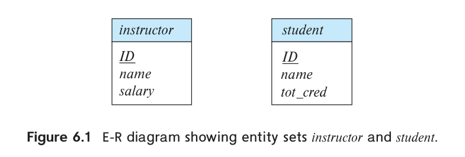
图6.1 instructor 和 student 实体集。
图中文字：instructor：教师；student：学生；ID：标识号；name：姓名；salary：工资；tot_cred：总学分。下划线表示主键。
6.2.2 联系集
联系（relationship）是若干实体之间的关联。例如，可以定义 advisor 联系，把教师 Katz 与学生 Shankar 关联起来，表示 Katz 是 Shankar 的导师。联系集（relationship set）是同类联系组成的集合。
考虑 instructor 和 student 两个实体集。定义联系集 advisor，表示学生与担任其导师的教师之间的关联。图6.2展示了这种关联；为使图形简洁，只列出两个实体集的部分属性。
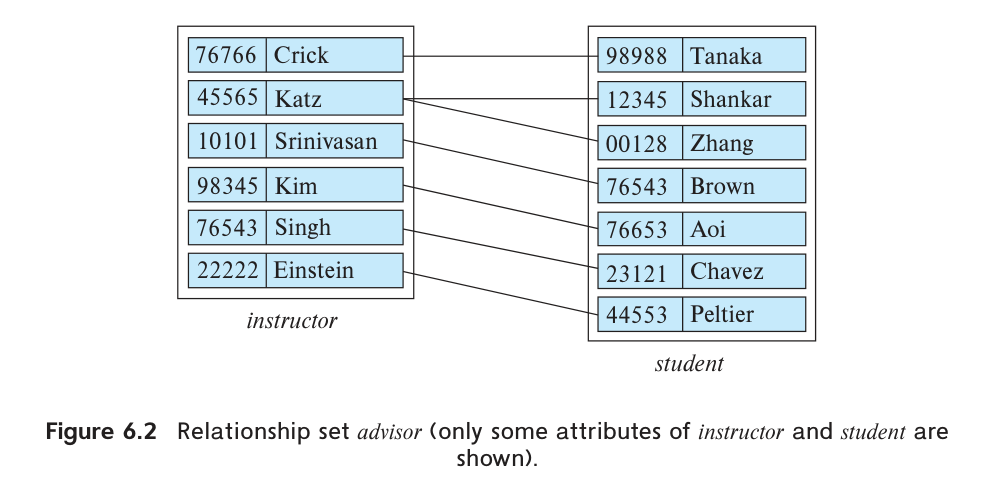
图6.2 advisor 联系集（仅显示 instructor 与 student 的部分属性）。
图中文字：instructor：教师；student：学生；advisor：导师联系。框中的编号和姓名是各教师、学生的标识；连线表示具体导师联系。
E-R 模式中的联系实例（relationship instance），表示所建模的现实组织中指定实体之间的关联。例如，教师号为45565的 Katz 和学号为12345的 Shankar 参与 advisor 的一个联系实例，表示在这所大学里，Katz 正在指导 Shankar。
E-R 图用菱形表示联系集，并用线把它连接到相应的实体集矩形。图6.3中，instructor 和 student 通过二元联系集 advisor 关联。
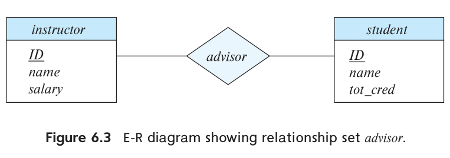
图6.3 对应 advisor 的 E-R 图。
图中文字：instructor：教师；student：学生；advisor：导师联系；ID：标识号；name：姓名；salary：工资；tot_cred：总学分。
再考虑 student 与 section 两个实体集，section 表示课程的一次开设。可以定义 takes 联系集，表示学生与其选修教学班之间的关联。
前面的例子都只关联两个实体集，但一般情况下，联系集也可以关联更多实体集。
形式上，联系集是在 n ≥ 2 个实体集上定义的数学关系；这些实体集不一定互不相同。若实体集为 E₁、E₂、…、Eₙ，则联系集 R 是下面集合的子集：
{(e₁, e₂, …, eₙ) | e₁ ∈ E₁, e₂ ∈ E₂, …, eₙ ∈ Eₙ}
其中 (e₁, e₂, …, eₙ) 是一个联系实例。
实体集与联系集之间的这种关联称为参与（participation），即 E₁、E₂、…、Eₙ 参与联系集 R。
实体在联系中发挥的作用称为其角色（role）。参与联系的实体集通常不同，角色便隐含在其中，无须特意指定。但当联系含义需要澄清时，角色很有用。例如，同一实体集以不同角色多次参与同一个联系集，这类联系集有时称为递归联系集（recursive relationship set）。此时必须显式命名角色，说明实体如何参与联系实例。考虑记录大学全部课程的 course 实体集。为了表示课程 C₂ 是课程 C₁ 的先修课，用课程实体的有序对构成联系集 prereq。有序对中的第一门课程担任 C₁ 的角色，第二门课程担任先修课 C₂ 的角色。因此 prereq 的各个联系用 (C₁, C₂) 表示，不用反向的 (C₂, C₁)。E-R 图在连接菱形与矩形的线上标注角色。图6.4在 course 与 prereq 之间标出了 course_id 和 prereq_id 两种角色。
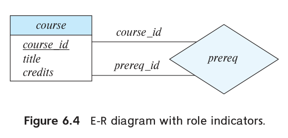
图6.4 E-R 图中的角色。
图中文字：course：课程；prereq：先修课联系；course_id：课程号；prereq_id：先修课号；title：标题；credits：学分。连线上的名称标明同一实体集参与联系时的不同角色。
联系也可以有属性，称为描述性属性（descriptive attribute）。例如，takes 联系集关联 student 与 section；可以为该联系保存 grade 属性，记录学生在这个教学班获得的成绩。
E-R 图用不分隔的矩形表示联系集的属性，并用虚线连接到表示联系集的菱形。例如，图6.5把 grade 描述性属性附加到 section 与 student 之间的 takes 联系集上。联系集可以具有多个描述性属性，例如还可以为 takes 保存 for_credit，记录学生是为取得学分而选课，还是旁听。
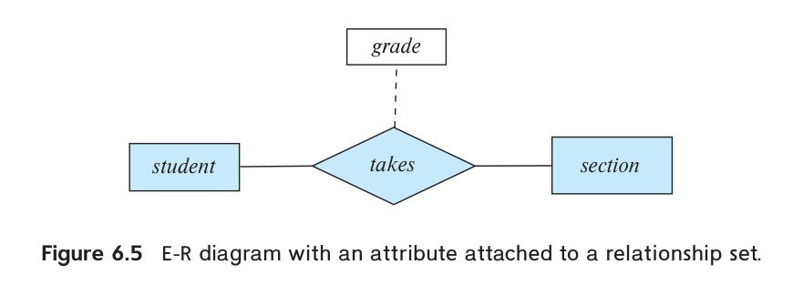
图6.5 联系集的描述性属性。
图中文字：student：学生；section：教学班；takes：选课联系；grade：成绩。
图6.5省略了两个实体集的属性，因为完整的大学 E-R 图会在其他位置给出。student 的属性前面已经介绍，section 的属性将在本章稍后介绍。复杂 E-R 设计可能需要分为多幅图，分布在不同页面。联系集应只出现一次，实体集则可以重复出现。实体集的属性只应在第一次出现时列出，以后再出现时省略属性，避免重复信息，以及不同位置所列属性可能不一致的问题。
同一组实体集可以参与多个联系集。例如，学生还可以担任课程助教，因而 section 和 student 除了参与 takes，还可以参与 teaching_assistant。
前面把联系集形式化定义为联系实例的集合。考虑 student 与 section 之间的 takes：集合不包含重复元素，因此一个学生与一个确定的教学班，在 takes 中只能有一个关联。也就是说，同一学生在同一教学班中只能关联一个成绩，这在当前场景中合理。如果希望允许多个成绩，就需要 grades 属性来存储一个成绩集合；这称为多值属性，6.3节会介绍。
advisor 和 takes 都是二元联系集（binary relationship set），即涉及两个实体集。数据库系统中的联系集大多是二元的，偶尔也涉及两个以上的实体集。参与联系集的实体集数量称为联系集的度（degree）：二元联系集的度为2，三元联系集的度为3。
例如，用 project 实体集表示大学开展的全部研究项目。考虑 instructor、student、project：每个项目可以关联多名学生和多名教师；而参与项目的每位学生，必须有一位关联教师指导其项目工作。暂且不考虑项目与教师、项目与学生这两类联系，重点表示“某个项目中，哪位教师指导哪位学生”。
为此，定义三元联系集 proj_guide，将 instructor、student、project 关联起来。proj_guide 的一个实例表示某位学生在某个项目上受某位教师指导。同一学生在不同项目中可能有不同导师，仅用学生与教师之间的二元联系无法表达这一点。
E-R 图也很容易表示非二元联系集。图6.6就是三元联系集 proj_guide 的表示。
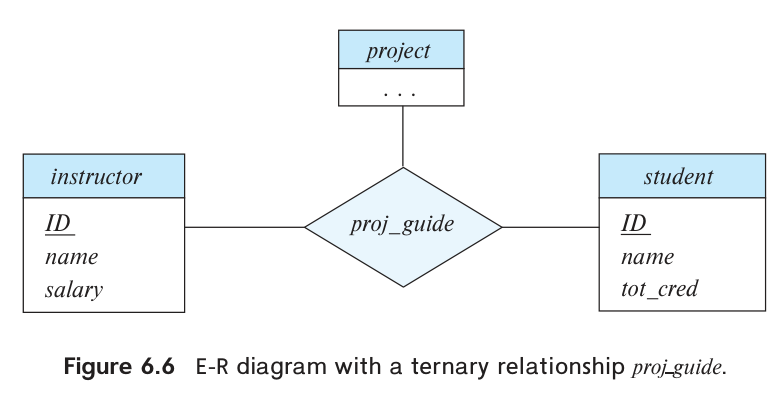
图6.6 一个三元联系集。
图中文字：instructor：教师；student：学生；project：项目；proj_guide：项目指导联系；ID：标识号；name：姓名；salary：工资；tot_cred：总学分；省略号表示项目属性在此省略。
6.3 复杂属性
每个属性都有一组允许的取值，称为该属性的域（domain）或值集（value set）。course_id 的域可以是某个长度的所有文本字符串，semester 的域可以是集合 {Fall, Winter, Spring, Summer} 中的字符串。
E-R 模型的属性可以按以下类型区分。
-
简单属性与复合属性。前面的属性都是简单属性，不能再分成子部分。复合属性可以分成其他属性。例如，name 可以由 first_name、middle_initial、last_name 组成。当用户有时需要引用整个属性，有时只需要引用其中一个组成部分时，使用复合属性很合适。假设为 student 增加地址，就可以把 address 定义为由 street、city、state、postal_code 组成的复合属性。1 复合属性把相关属性组织在一起，使模型更清晰。
复合属性还可以具有层次结构。例如 address 中的 street，可以进一步分为 street_number、street_name、apartment_number。图6.7用 instructor 实体集展示这两个复合属性。 - 单值属性与多值属性。此前示例中，每个实体的一个属性只有一个值。例如，某个学生实体的 student_ID 只有一个学号，这称为单值属性。也可能某个实体的一个属性具有一组值。例如，为 instructor 增加 phone_number 后，一位教师可能没有电话号码，也可能有一个或多个，不同教师的号码数量可以不同，这称为多值属性。再如，为 instructor 增加 dependent_name，列出所有受抚养人的姓名；每位教师可能没有受抚养人，也可能有一名或多名，因此该属性也是多值的。 - 派生属性。这类属性的值可以由其他相关属性或实体推导出来。例如，instructor 的 students_advised 表示该教师指导的学生人数，可以通过统计与该教师关联的学生实体数得到。
再如，instructor 的 age 表示年龄；若还有 date_of_birth，就可以根据出生日期与当前日期计算年龄。因此 age 是派生属性，date_of_birth 则称为基本属性或存储属性。派生属性的值不存储，在需要时计算。
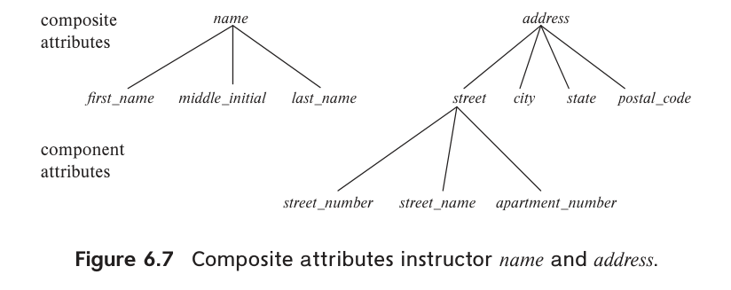
图6.7 复合属性。
图中文字：composite attributes：复合属性；component attributes：组成属性。name：姓名，由 first_name（名）、middle_initial（中间名首字母）、last_name（姓）组成；address：地址，由 street（街道）、city（城市）、state（州）、postal_code（邮政编码）组成；street 又由 street_number（门牌号）、street_name（街名）、apartment_number（公寓号）组成。
图6.8展示如何用 E-R 记法表示复合属性。instructor 中的简单属性 name 被一个由 first_name、middle_initial、last_name 组成的复合属性替代。若为 instructor 增加 address，也可以把它定义为包含 street、city、state、postal_code 的复合属性；street 自身又由 street_number、street_name、apartment_number 组成。图中还用“{phone_number}”表示多值属性电话号码，用“age()”表示派生属性年龄。
译注： 图6.8把 apartment_number 缩写为 apt_number，并用 zip 表示正文中的 postal_code；这些拼写差异来自原书。
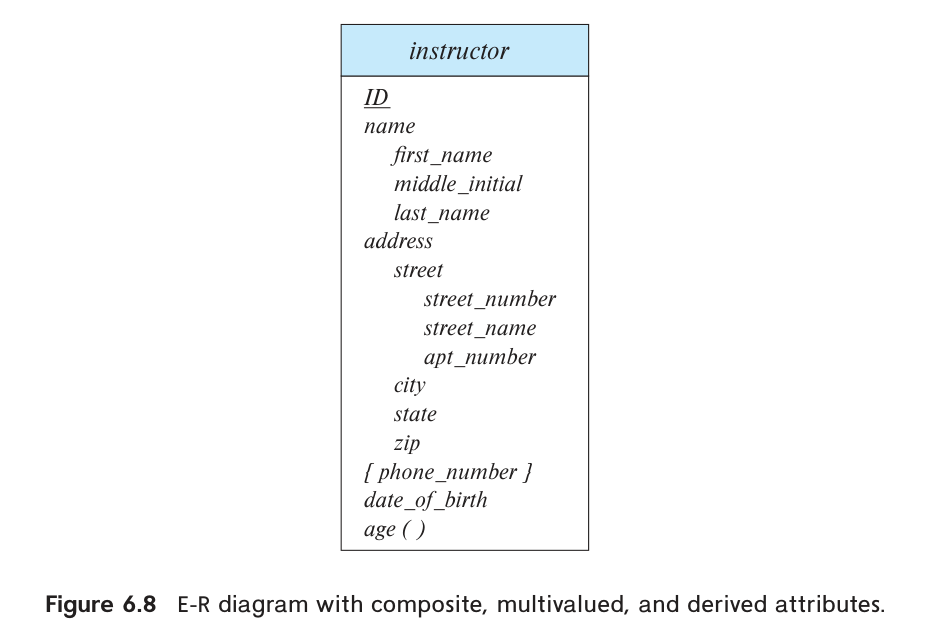
图6.8 复合属性、多值属性和派生属性。
图中文字：instructor：教师；ID：标识号；name：姓名；first_name：名；middle_initial：中间名首字母；last_name：姓；address：地址；street：街道；street_number：门牌号；street_name：街名；apt_number：公寓号；city：城市；state：州；zip：邮政编码；date_of_birth：出生日期；age：年龄（派生属性）；phone_number：电话号码（多值属性）。
当实体的某个属性没有值时，属性取 null。null 可以表示“不适用”，即这个实体没有相应的值。例如，没有中间名的人，其 middle_initial 可以为 null。null 也可以表示属性值未知。未知又可能指“缺失”：值确实存在，但没有掌握；也可能指“不确定”：连这个值是否存在都不知道。
例如，某位教师的 name 为 null 时，我们认为姓名缺失，因为每位教师都应有姓名。而 apartment_number 为 null，可能表示地址中没有公寓号，即不适用；可能有公寓号但不知道具体值，即缺失；也可能不知道该教师地址是否包含公寓号，即未知。
6.4 映射基数
映射基数（mapping cardinality）又称基数比，表示一个实体通过某个联系集可以关联多少个其他实体。它最常用于描述二元联系集，也能帮助描述涉及更多实体集的联系。
对于实体集 A、B 之间的二元联系集 R，映射基数必须属于以下四种情况之一。
- 一对一：A 中每个实体至多关联 B 中一个实体，B 中每个实体也至多关联 A 中一个实体（图6.9a）。
- 一对多：A 中每个实体可以关联 B 中任意多个实体，包括零个；B 中每个实体至多关联 A 中一个实体（图6.9b）。
- 多对一：A 中每个实体至多关联 B 中一个实体；B 中每个实体可以关联 A 中任意多个实体，包括零个（图6.10a）。
- 多对多：A 中每个实体可以关联 B 中任意多个实体，包括零个；B 中每个实体也可以关联 A 中任意多个实体，包括零个（图6.10b）。
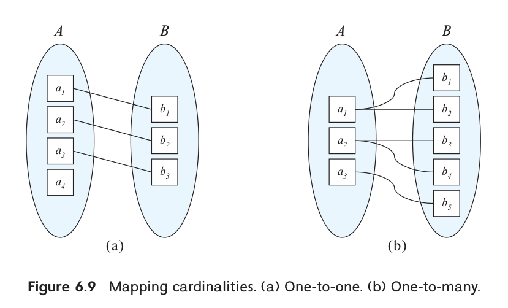
图6.9 映射基数。
图中文字：(a) 一对一；(b) 一对多。A、B 是实体集，aᵢ、bᵢ 是其中的实体，连线表示联系。
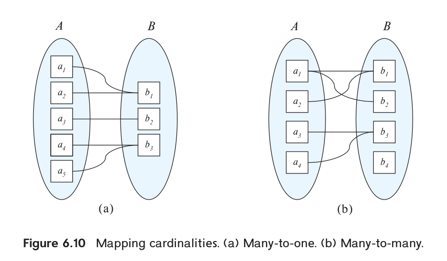
图6.10 映射基数。
图中文字：(a) 多对一；(b) 多对多。A、B 是实体集，aᵢ、bᵢ 表示其中的实体。
某个联系集应采用哪种映射基数，取决于它所表示的现实情况。例如，若学生可以由多名教师共同指导，advisor 就是多对多联系。若学校规定每位学生只能有一位导师，而一位教师可以指导多名学生，则从 instructor 到 student 的联系必须为一对多。映射基数因此可以规定现实中允许出现哪些联系。
E-R 图通过联系集与实体集之间的有向线（→）或无向线（—）表示基数约束。以大学为例：
- 一对一：从联系集分别向两个实体集画有向线。图6.11a中，指向 instructor 和 student 的箭头表示，一位教师至多指导一名学生，一名学生至多有一位导师。
- 一对多：从联系集向“一”端画有向线。图6.11b中，advisor 到 instructor 为有向线，到 student 为无向线，表示一位教师可以指导多名学生，一名学生至多有一位导师。
- 多对一：同样从联系集向“一”端画有向线。图6.11c中，advisor 到 instructor 为无向线，到 student 为有向线，表示一位教师至多指导一名学生，一名学生可以有多位导师。
- 多对多：联系集与两端实体集都用无向线连接。图6.11d表示一位教师可以指导多名学生，一名学生也可以有多位导师。
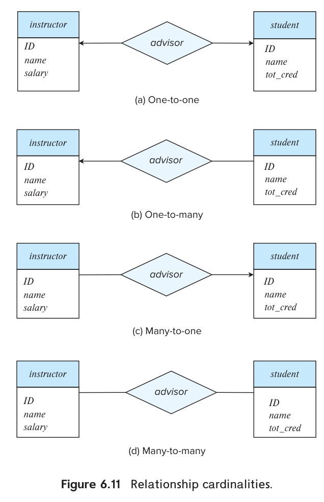
图6.11 E-R 图中的联系基数。
图中文字：(a) 一对一；(b) 一对多；(c) 多对一；(d) 多对多。instructor：教师；student：学生；advisor：导师联系；ID：标识号；name：姓名；salary：工资；tot_cred：总学分。
如果实体集 E 的每个实体都必须参与联系集 R 中至少一个联系，就称 E 完全参与（total participation） R。如果允许 E 中某些实体不参与 R 中的任何联系，就称为部分参与（partial participation）。
例如，学校可能要求每位学生至少有一位导师。在 E-R 模型中，就是要求每个学生实体都通过 advisor 与至少一个教师实体关联，因此 student 完全参与 advisor。教师则可以不指导学生，可能只有部分教师通过 advisor 与学生关联，因此 instructor 部分参与 advisor。
用双线表示实体集完全参与联系集。图6.12中的双线表示每位学生都必须有导师。
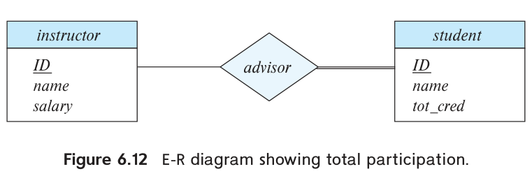
图6.12 实体集的完全参与。
图中文字：student：学生；instructor：教师；advisor：导师联系；ID：标识号；name：姓名；salary：工资；tot_cred：总学分。双线表示 student 完全参与 advisor。
E-R 图也可以对每个实体参与联系的次数施加更复杂的约束。在线旁标注最小、最大基数，形式为 l..h，l 表示最小值，h 表示最大值。最小值为1意味着完全参与，每个实体至少出现在一个联系中。最大值为1意味着至多参与一个联系，最大值为 * 则表示不设上限。
例如，图6.13中 advisor 与 student 之间的约束是1..1，即最小值和最大值都为1，每名学生必须恰有一位导师。advisor 与 instructor 之间的0..*表示教师可以没有学生，也可以指导多名学生。因此，从 instructor 到 student，advisor 为一对多联系；而 student 完全参与 advisor，意味着每名学生都必须有导师。
容易把左边的0..*看反，误认为从 instructor 到 student 是多对一；这与正确含义恰好相反。
如果两条边的最大值都为1，联系就是一对一。若左边改为1..*，则要求每位教师至少指导一名学生。
图6.13也可以不用基数范围，改为 student 到 advisor 的双线，以及 advisor 到 instructor 的箭头。两种画法规定的约束完全相同。
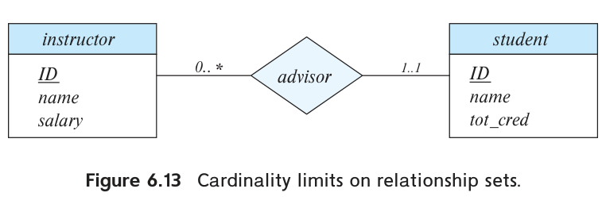
图6.13 联系的基数上下限。
图中文字：instructor：教师；student：学生；advisor：导师联系；ID：标识号；name：姓名；salary：工资；tot_cred：总学分。0..* 表示零个或多个；1..1 表示恰好一个。
非二元联系集也能表示某些多对一约束。假设学生在一个项目中至多有一位指导教师，可以在 proj_guide 到 instructor 的边上加一个指向 instructor 的箭头。
我们只允许从非二元联系集引出至多一个箭头，因为引出两个或更多箭头时，可能有两种解释。6.5.2节将进一步讨论。
6.5 主键
必须有办法区分同一实体集中的各个实体，以及同一联系集中的各个联系。
6.5.1 实体集
概念上，各个实体彼此不同；但在数据库中，这些差异必须通过属性表达。因此，实体的属性值应能唯一标识它，即同一实体集中不允许两个实体的所有属性值完全相同。
2.3节针对关系模式定义的键，可以直接用于实体集：实体的键是一组足以彼此区分实体的属性。超键、候选键、主键这些概念，同样适用于实体集。
键也能唯一标识联系，帮助区分不同联系。下面给出联系集的键的相应定义。
6.5.2 联系集
需要一种机制，区分联系集中的不同联系。设 R 涉及实体集 E₁、E₂、…、Eₙ，用 primary-key(Eᵢ) 表示构成 Eᵢ 主键的属性集合。暂且假设所有主键属性名互不重复。联系集主键的构成，与 R 所关联的属性有关。
如果 R 没有描述性属性，则下面这组属性描述 R 中的一个联系：
primary-key(E₁) ∪ primary-key(E₂) ∪ ⋯ ∪ primary-key(Eₙ)
如果 R 具有属性 a₁、a₂、…、aₘ，则下面这组属性描述 R 中的一个联系：
primary-key(E₁) ∪ primary-key(E₂) ∪ ⋯ ∪ primary-key(Eₙ) ∪ {a₁, a₂, …, aₘ}
如果不同实体集的主键属性同名，就重命名以作区分；可以将实体集名与属性名组合成唯一名称。若一个实体集多次参与同一联系集，例如6.2.2节的 prereq，则用角色名替代实体集名，形成唯一属性名。
联系集是联系实例的集合，每个实例由参与其中的实体唯一标识。因此，以上两种情况下，属性集合
primary-key(E₁) ∪ primary-key(E₂) ∪ ⋯ ∪ primary-key(Eₙ)
都构成联系集的超键。
二元联系集的主键选择取决于映射基数。对于多对多联系，上述各主键的并是极小超键，可以选为主键。例如，若6.2.2节的 instructor、student 之间的 advisor 为多对多，则 advisor 的主键由 instructor 与 student 的主键合并构成。
对于一对多和多对一联系，“多”端的主键是极小超键，可以用作联系集主键。例如，若从 student 到 instructor 为多对一，即每名学生至多有一位导师，则 advisor 的主键就是 student 的主键。若每位教师只能指导一名学生，即从 instructor 到 student 为多对一，则 advisor 的主键就是 instructor 的主键。
对于一对一联系，任一参与实体集的主键都是极小超键，可以任选其一作为联系集主键。例如，若一位教师只能指导一名学生，一名学生也只能由一位教师指导，advisor 为一对一，就可以选择 student 或 instructor 的主键。
对于非二元联系，若没有基数约束，前面构造的超键就是唯一的候选键，可以选为主键。有基数约束时，主键选择更复杂。6.4节只允许从一个联系集引出至多一个箭头，是因为非二元联系集有两个或更多箭头时，存在以下两种解释。
设 R 关联 E₁、E₂、E₃、E₄，只有通向 E₃ 和 E₄ 的边有箭头。
- 来自 E₁、E₂ 的一个确定实体组合，至多对应来自 E₃、E₄ 的一个实体组合。因此，R 的主键可以由 E₁、E₂ 的主键合并构成。
- 来自 E₁、E₂、E₃ 的一个确定实体组合，至多对应 E₄ 的一个实体；同时，来自 E₁、E₂、E₄ 的一个确定组合，至多对应 E₃ 的一个实体。此时 E₁、E₂、E₃ 的主键之并是候选键，E₁、E₂、E₄ 的主键之并也是候选键。
这两种解释在实际中都有人采用，也各自适用于某些组织。为避免混淆，我们只允许从非二元联系集引出一个箭头，此时两种解释等价。
若需要表示上述多箭头情形，可以修改 E-R 设计，把非二元联系集替换为实体集：将原联系集的每个实例视为实体，再通过独立联系集，把这些实体与 E₁、E₂、E₄ 的对应实例关联。更简单的方法，是使用第7章7.4节将介绍的函数依赖，它可以简洁而明确地表达这两种解释。
联系集 R 的主键由以下主键合并构成：参与 R、且没有从 R 指向自身的入箭头的各实体集 Eᵢ 的主键。
译注： 本节前段重建四元联系时，原文只列出 E₁、E₂、E₄，漏写 E₃；按该构造应连接全部四个实体集。
6.5.3 弱实体集
考虑 section 实体，它由课程号、学期、年份和教学班号唯一标识，并与 course 实体关联。假设在 section 和 course 之间创建 sec_course 联系集。
这时 sec_course 中的信息是冗余的，因为 section 已有 course_id 属性，标识其关联课程。一种处理方式是去掉 sec_course，但这样教学班与课程的联系就隐含在属性中，无法在模型中明确表示，因而并不理想。
另一种处理方式，是不在 section 实体中保存 course_id，只保存 sec_id、year、semester。2 然而，仅靠这些属性就无法唯一标识教学班：不同课程的教学班可能具有相同的教学班号、年份和学期。为此，可以把 sec_course 看作一种特殊联系，由它提供唯一标识 section 所缺少的信息，本例中就是 course_id。
弱实体集（weak entity set）将上述想法形式化。弱实体集的存在依赖另一个实体集，后者称为它的标识实体集（identifying entity set）。我们使用标识实体的主键，加上称为分辨属性（discriminator attribute）的附加属性，唯一标识弱实体。无需为弱实体单独指定一个仅由自身属性构成的主键。非弱实体集称为强实体集（strong entity set）。
每个弱实体都必须关联一个标识实体，因此称弱实体集在存在上依赖标识实体集。标识实体集“拥有”它所标识的弱实体集。将两者关联起来的联系，称为标识联系（identifying relationship）。
从弱实体集到标识实体集，标识联系为多对一，且弱实体集完全参与该联系。标识联系不应带描述性属性，因为这些属性可以直接放在弱实体集中。
本例中，section 的标识实体集是 course，sec_course 将教学班与对应课程关联，是标识联系。section 的主键由 course 的主键和 section 的分辨属性共同构成，即 {course_id, sec_id, year, semester}。
也可以让 sec_id 在全校所有课程中全局唯一，这样 section 实体集便有了自己的主键。但从概念上看，教学班仍依赖课程而存在，把它建模为弱实体集可以明确表达这种依赖。
E-R 图用双矩形表示弱实体集，用虚线下划线标出分辨属性；连接弱实体集与标识强实体集的联系，用双菱形表示。图6.14中，section 通过 sec_course 依赖 course。
图中的双线表示 section 完全参与 sec_course，即每个教学班都必须通过 sec_course 关联某门课程。sec_course 指向 course 的箭头则表示，一个教学班只关联一门课程。
一般来说，弱实体集必须完全参与其标识联系集，而且从弱实体集到标识实体集的联系必须为多对一。
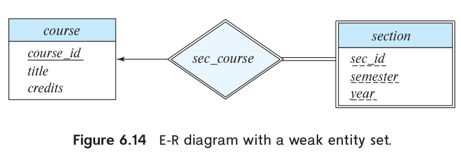
图6.14 弱实体集。
图中文字：course：课程；section：教学班；sec_course：教学班所属课程联系；course_id：课程号；title：标题；credits：学分；sec_id：教学班号；semester：学期；year：年份。双矩形表示弱实体集，双菱形表示标识联系，虚下划线表示分辨属性。
弱实体集还可以参与其他联系。例如，section 可以与 time_slot 关联，确定某个教学班上课的时间。弱实体集也可以在另一弱实体集的标识联系中充当拥有者。一个弱实体集还可以有多个标识实体集；此时，一个弱实体由这些实体集各取一个实体所组成的组合来标识，其主键是各标识实体集主键的并，再加上自身分辨属性。
6.6 去除实体集中的冗余属性
用 E-R 模型设计数据库，通常先确定应包含哪些实体集。例如，大学模型包含 student 和 instructor。确定实体集之后，再选择适当属性，表示希望在数据库中记录的值。前面为 instructor 选择 ID、name、dept_name、salary，也可以加入 phone_number、office_number、home_page 等。具体选择由熟悉组织结构的设计者决定。
选定实体及其属性后，再建立实体之间的联系集。这可能使原有实体集的部分属性变得冗余，需要删除。例如，考虑 instructor 与 department：
- instructor 包含 ID、name、dept_name、salary，主键为 ID。
- department 包含 dept_name、building、budget，主键为 dept_name。
使用 inst_dept 联系集，把 instructor 与 department 关联起来，表示每位教师所属的系。dept_name 同时出现在两个实体集中；它是 department 的主键，在 instructor 中便形成冗余，需要删除。
从 instructor 实体集中删除 dept_name，可能不太符合直觉，因为前几章的 instructor 关系具有这个属性。后面会看到，在由 E-R 图生成关系模式时，只要每位教师至多关联一个系，dept_name 的确会重新加入 instructor 关系。如果教师可以关联多个系，则这种联系保存在独立的 inst_dept 关系中。
统一通过联系表示教师与系的关联，可以明确表达逻辑联系，并避免过早假定每位教师只能属于一个系。
同样，student 通过 student_dept 与 department 关联，因而 student 中也无须保存 dept_name。
译注： 原文在这里写 student_dept，后文及图6.15写 stud_dept，均指学生与院系之间的同一联系。
再考虑教学班和上课时间段。每个时间段由 time_slot_id 标识，关联一组每周上课安排；每项安排由星期几、开始时间、结束时间确定。可以把这些安排建模为多值复合属性。假设如下设计 section 和 time_slot：
- section 包含 course_id、sec_id、semester、year、building、room_number、time_slot_id，主键为 (course_id, sec_id, year, semester)。
- time_slot 包含主键 time_slot_id，3 以及多值复合属性 {(day, start_time, end_time)}。4
通过 sec_time_slot 关联这两个实体集。time_slot_id 同时出现在两者中；它是 time_slot 的主键，在 section 中便形成冗余，需要删除。
最后，假设 classroom 的属性为 building、room_number、capacity，主键为 building 和 room_number，并用 sec_class 关联 section 与 classroom。那么 {building, room_number} 在 section 中也属于冗余属性。
良好的 E-R 设计不包含冗余属性。下面列出大学示例的实体集和属性，主键以下划线标出：
- classroom：(building, room_number, capacity)。
- department：(dept_name, building, budget)。
- course：(course_id, title, credits)。
- instructor：(ID, name, salary)。
- section：(course_id, sec_id, semester, year)。
- student：(ID, name, tot_cred)。
- time_slot：(time_slot_id, {(day, start_time, end_time)})。
译注： 原书这份清单的 section 仍列出 course_id，与前面去除冗余属性的说明不一致。图6.15的弱实体 section 只列 sec_id、semester、year，通过 sec_course 获得课程标识；转换后的关系模式才包含 course_id。
设计中的联系集如下：
- inst_dept：关联教师与系。
- stud_dept：关联学生与系。
- teaches：关联教师与教学班。
- takes：关联学生与教学班，带有描述性属性 grade。
- course_dept：关联课程与系。
- sec_course：关联教学班与课程。
- sec_class：关联教学班与教室。
- sec_time_slot：关联教学班与时间段。
- advisor：关联学生与教师。
- prereq：关联课程与其先修课。
读者可以检查，各实体集中都没有因这些联系集而冗余的属性。还可以检查，图2.9大学数据库关系模式中除约束外的全部信息，都已由上述设计表示；其中，关系设计的若干属性，在 E-R 设计中改用联系表示。
现在可以给出本书一直使用的大学示例的完整 E-R 图，即图6.15。它与前面的文字描述对应，并增加了一些约束。
大学数据库要求每位教师恰好属于一个系。因此，图6.15中 instructor 与 inst_dept 之间为双线，表示完全参与，即每位教师都必须关联一个系；inst_dept 到 department 的箭头则表示，每位教师至多关联一个系。
同样，course 与 course_dept 之间的双线，表示每门课程都必须属于某个系；student 与 stud_dept 之间的双线，表示每位学生都必须主修某个系的专业。两处联系都有指向 department 的箭头，表示一门课程或一名学生只关联一个系。
同样，course 与 course_dept 之间的双线，表示每门课程都必须属于某个系；student 与 stud_dept 之间的双线，表示每位学生都必须主修某个系的专业。两处联系都有指向 department 的箭头，表示一门课程或一名学生只关联一个系。
译注： 原书连续重复了这一段，此处按原文保留。
图6.15还表示，takes 具有描述性属性 grade，每名学生至多有一位导师。section 是弱实体集，以 sec_id、semester、year 为分辨属性；sec_course 是标识联系集，将弱实体集 section 与强实体集 course 关联起来。
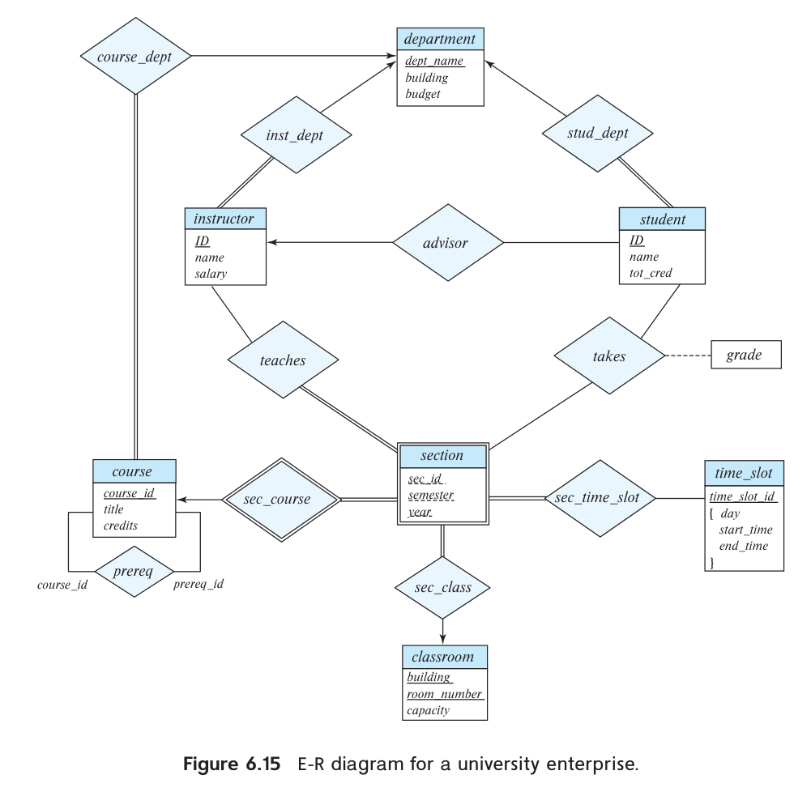
图6.15 大学的 E-R 图。
图中文字：classroom：教室；department：院系；course：课程；instructor：教师；section：教学班；student：学生；time_slot：时间段。联系名：inst_dept 教师所属院系，course_dept 课程所属院系，stud_dept 学生所属院系，sec_class 教学班使用教室，sec_course 教学班所属课程，sec_time_slot 教学班上课时间，teaches 授课，takes 选课，advisor 导师，prereq 先修课。属性：building 楼宇，room_number 房间号，capacity 容量，dept_name 院系名，budget 预算，ID 标识号，name 姓名，salary 工资，tot_cred 总学分，course_id 课程号，title 标题，credits 学分，sec_id 教学班号，semester 学期，year 年份，grade 成绩，time_slot_id 时间段号，day 星期几，start_time 开始时间，end_time 结束时间，prereq_id 先修课号。
6.7节将说明如何从这幅 E-R 图推导出前面使用的各个关系模式。
6.7 将 E-R 图转换为关系模式
E-R 模型和关系数据库模型，都是对现实组织的抽象逻辑表示。两者采用相似的设计原则，因此可以把 E-R 设计转换为关系设计。对于数据库设计中的每个实体集和联系集，都建立一个对应的关系模式，并用相应实体集或联系集的名称命名。
本节说明如何用关系模式表示 E-R 模式，以及如何把 E-R 设计产生的约束映射为关系模式的约束。
6.7.1 强实体集的表示
设强实体集 E 只具有简单描述性属性 a₁、a₂、…、aₙ。用同名的关系模式 E 表示它，模式具有 n 个不同属性。该模式上关系中的每个元组，对应实体集 E 的一个实体。
从强实体集生成模式时，实体集的主键就作为关系模式的主键。这直接来自每个元组对应一个特定实体的事实。
例如，图6.15的 student 实体集有 ID、name、tot_cred 三个属性，可以表示为：
student(ID, name, tot_cred)
学号 ID 是实体集主键，也就是关系模式主键。
图6.15中，除 time_slot 外，所有强实体集都只有简单属性。由这些实体集生成的模式见图6.16。instructor、student、course 与前几章使用的模式不同：它们没有 dept_name。稍后会再次讨论这一问题。
| 关系模式 | 属性（下划线表示主键） |
|---|---|
| classroom | building, room_number, capacity |
| department | dept_name, building, budget |
| course | course_id, title, credits |
| instructor | ID, name, salary |
| student | ID, name, tot_cred |
图6.16 从图6.15的实体集生成的模式。
6.7.2 具有复杂属性的强实体集的表示
强实体集具有非简单属性时，处理稍复杂。对于复合属性，为它的每个组成属性创建独立属性，复合属性本身不再对应独立属性。例如，图6.8的 instructor 中，name 被转换为 first_name、middle_initial、last_name，不为 name 另建属性或模式。address 被转换为 street、city、state、postal_code；street 也是复合属性，因此继续替换为 street_number、street_name、apt_number。
多值属性的处理与其他属性不同。E-R 图中的属性通常直接映射为相应关系模式的属性，多值属性则是例外，需要创建新的关系模式，下面会介绍。
派生属性不在关系数据模型中显式表示。不过，在其他数据模型中，可以用存储过程、函数或方法表示。
因此，具有复杂属性的 instructor 实体集，在暂不考虑多值属性时，生成的关系模式为：
instructor(ID, first_name, middle_initial, last_name, street_number, street_name, apt_number, city, state, postal_code, date_of_birth)
对于多值属性 M，创建关系模式 R，包含对应 M 的属性 A，以及 M 所属实体集或联系集的主键属性。
例如，图6.8的 instructor 包含多值属性 phone_number，其主键为 ID。为电话号码创建模式：
instructor_phone(ID, phone_number)
教师的每个电话号码，在该关系中对应一个唯一元组。若教师号为22222，有555-1234和555-4321两个号码，instructor_phone 就包含 (22222, 555-1234) 和 (22222, 555-4321) 两个元组。
把该模式的所有属性作为主键。在上例中，主键由 instructor_phone 的两个属性共同构成。
还需要为这个由多值属性生成的模式创建外键约束：其中来自实体集主键的属性，应参照由实体集生成的关系。在本例中，instructor_phone.ID 参照 instructor。
如果实体集只有两个属性，一个单属性主键 B 和一个多值属性 M，那么由实体集自身生成的关系模式只含 B。可以删除这个关系，只保留含 B 及对应 M 的属性 A 的关系模式。
例如，图6.15的 time_slot 实体集以 time_slot_id 为主键，另外只有一个多值属性，而这个多值属性恰好还是复合属性。可以仅用这个多值复合属性生成的模式表示实体集：
time_slot(time_slot_id, day, start_time, end_time)
虽然 E-R 图没有表示相应约束，但我们知道，同一个时间段不可能有两次上课安排在同一星期几、同一时刻开始，却在不同时刻结束。根据这条约束，time_slot 模式的主键中可以省略 end_time。
由实体集自身生成的关系只含 time_slot_id。删除它可以简化数据库模式，但会给外键带来一个缺点，6.7.4节将简要讨论。
6.7.3 弱实体集的表示
设弱实体集 A 的属性为 a₁、a₂、…、aₘ，它依赖强实体集 B，而 B 的主键属性为 b₁、b₂、…、bₙ。用同名关系模式 A 表示弱实体集，为下列集合中的每个成员建立一个属性：
{a₁, a₂, …, aₘ} ∪ {b₁, b₂, …, bₙ}
模式的主键由强实体集主键与弱实体集分辨属性共同构成。此外，在 A 上建立外键约束，指定 b₁、b₂、…、bₙ 参照 B 的主键。这样，每个表示弱实体的元组，都有一个表示其对应强实体的元组。
例如，图6.15的弱实体集 section 包含 sec_id、semester、year，所依赖的 course 以 course_id 为主键。因此生成：
section(course_id, sec_id, semester, year)
主键由 course 的主键和 section 的分辨属性 sec_id、semester、year 构成。还需要在 section 上定义外键，让 course_id 参照 course 的主键。5
6.7.4 联系集的表示
设 R 为联系集，a₁、a₂、…、aₘ 是所有参与实体集主键的并，b₁、b₂、…、bₙ 是 R 的描述性属性，如果存在的话。为 R 建立同名关系模式，并为下列集合中的每个成员建立一个属性：
{a₁, a₂, …, aₘ} ∪ {b₁, b₂, …, bₙ}
6.5节介绍了二元联系集主键的选择，所选主键属性也用作关系模式 R 的主键。
例如，图6.15中的 advisor 关联：
- instructor，主键为 ID。
- student，主键为 ID。
advisor 没有描述性属性，因此对应模式只有两个属性，分别来自 instructor 和 student 的主键。由于两者同名，将它们分别重命名为 i_ID 和 s_ID。从 student 到 instructor，advisor 为多对一，因此 advisor 关系模式的主键为 s_ID。
还要在 R 上建立外键约束：对于参与 R 的每个实体集 Eᵢ，让 R 中来自 Eᵢ 主键的属性，参照表示 Eᵢ 的关系模式的主键。
在 advisor 示例中，创建两个外键约束：i_ID 参照 instructor 的主键，s_ID 参照 student 的主键。对图6.15其余联系集应用同样的方法，得到图6.17的关系模式。
| 关系模式 | 属性（下划线表示主键） |
|---|---|
| teaches | ID, course_id, sec_id, semester, year |
| takes | ID, course_id, sec_id, semester, year, grade |
| prereq | course_id, prereq_id |
| advisor | s_ID, i_ID |
| sec_course | course_id, sec_id, semester, year |
| sec_time_slot | course_id, sec_id, semester, year, time_slot_id |
| sec_class | course_id, sec_id, semester, year, building, room_number |
| inst_dept | ID, dept_name |
| stud_dept | ID, dept_name |
| course_dept | course_id, dept_name |
图6.17 从图6.15的联系集生成的模式。
prereq 的两个角色都引用同一个 course 关系，因此用联系上的角色标识作为属性名。
与 advisor 类似，sec_course、sec_time_slot、sec_class、inst_dept、stud_dept、course_dept 的主键都只来自所关联的两个实体集中的一方，因为这些联系均为多对一。
图6.17没有画出外键，但每个关系都有两个外键约束，分别参照两个参与实体集所生成的关系。例如，sec_course 的外键参照 section 和 classroom，teaches 的外键参照 instructor 和 section，takes 的外键参照 student 和 section。
译注： 原文此处的 classroom 应为 course；sec_course 连接的是 section 与 course。
前面把含多值属性的 time_slot 实体集优化为只用一个关系表示，这使我们无法从 sec_time_slot 建立指向实体集 time_slot 所生成关系的外键，因为那个关系已经被删除。保留下来的，是由多值属性生成并命名为 time_slot 的关系。对于某个 time_slot_id，它可能没有对应元组，也可能有多个，所以 sec_time_slot 中的 time_slot_id 无法把该关系作为外键参照目标。
细心的读者也许会问，为什么前几章没有 sec_course、sec_time_slot、sec_class、inst_dept、stud_dept、course_dept 这些模式？原因是，到目前为止的转换算法会生成一些可以删除或与其他模式合并的模式，下面讨论。
6.7.5 模式的冗余
译注： 本段原文“the of a weak entity set”漏词，按上下文应为“the primary key of a weak entity set”；译文补为“弱实体集的主键”。
连接弱实体集与其对应强实体集的联系，需要特殊处理。6.5.3节指出，这些联系为多对一，没有描述性属性；弱实体集的主键还包含强实体集的主键。图6.14中，section 通过 sec_course 依赖 course。section 的主键为 {course_id, sec_id, semester, year}，course 的主键为 course_id。sec_course 没有描述性属性，因此其模式的属性为 course_id、sec_id、semester、year；section 的模式也包含这些属性。sec_course 中的每个 (course_id, sec_id, semester, year) 组合，都出现在 section 中，反之也一样。因此 sec_course 模式是冗余的。
一般来说，连接弱实体集与其对应强实体集的标识联系，其关系模式是冗余的，无须保留在基于 E-R 图生成的关系数据库设计中。
6.7.6 模式的合并
考虑从实体集 A 到实体集 B 的多对一联系集 AB。按前面的构造算法得到 A、B、AB 三个模式。再假设 A 完全参与 AB，即 A 中每个实体都必须参与 AB。此时可以合并 A 与 AB，得到属性为两者属性并集的一个模式。合并后仍使用 A 的主键，即联系集模式并入的那个实体集模式的主键。
以图6.15中满足这些条件的联系为例：
- inst_dept：instructor 与 department 分别对应 A、B。因此可将 inst_dept 并入 instructor，所得属性为 {ID, name, dept_name, salary}。
- stud_dept：student 与 department 分别对应 A、B。将 stud_dept 并入 student，所得属性为 {ID, name, dept_name, tot_cred}。
- course_dept：course 与 department 分别对应 A、B。将 course_dept 并入 course，所得属性为 {course_id, title, dept_name, credits}。
- sec_class：section 与 classroom 分别对应 A、B。将 sec_class 并入 section，所得属性为 {course_id, sec_id, semester, year, building, room_number}。
- sec_time_slot：section 与 time_slot 分别对应 A、B。将 sec_time_slot 并入上一步得到的 section，所得属性为 {course_id, sec_id, semester, year, building, room_number, time_slot_id}。
对于一对一联系，可以把联系集的关系模式并入任一端实体集的模式。
部分参与时，也可以借助 null 合并模式。例如，若 instructor 只部分参与 inst_dept，那么没有关联院系的教师，其 dept_name 存为 null。
最后考虑原本属于联系集模式的外键约束。它本来分别参照各个参与实体集。合并时，删除指向被并入实体集自身的约束，把其他外键约束加入合并后的模式。例如，inst_dept 的 dept_name 有参照 department 的外键；将 inst_dept 并入 instructor 后，就由 instructor 关系承担该外键约束。
6.8 扩展的 E-R 特性
基本的 E-R 概念能够为数据库的大多数特征建模，但数据库的某些方面，用基本 E-R 模型的扩展来表达会更贴切。本节讨论特化、概化、高层与低层实体集、属性继承，以及聚集。
为便于讨论，我们使用稍复杂一些的大学数据库模式。具体来说，定义 person 实体集，用它为大学中的各类人员建模，其属性为 ID、name、street、city。
6.8.1 特化
实体集中的某些实体，可以因某种特征而与集合中的其他实体区分开，构成一个子组。例如，实体集中的一部分实体，可能具有并非该实体集所有实体都具有的属性。E-R 模型提供了表示这类特殊实体组的方法。
例如，可以将 person 实体集进一步分为：
- employee（雇员）。
- student（学生）。
每类人员的属性，都包括 person 实体集的全部属性，还可能有一些额外属性。例如，employee 实体还可以用 salary 描述，student 实体还可以用 tot_cred 描述。在实体集中划分子组的过程，称为特化（specialization）。对 person 特化后，就能根据人员对应雇员还是学生，区分 person 实体。一般来说，一个人可能是雇员、是学生、兼具这两种身份，也可能两种身份都没有。
再看一个例子。假设大学把学生分为研究生（graduate）和本科生（undergraduate）。研究生会分到一间办公室，本科生会分配到某个住宿学院。每类学生的属性，都包括 student 实体集的全部属性，以及一些额外属性。
可以反复应用特化，逐步细化设计。大学可以为 student 创建 graduate 和 undergraduate 两个特化。前面已经看到，student 实体由 ID、name、street、city、tot_cred 描述。graduate 实体集具有 student 的全部属性，另外还有 office_number；undergraduate 具有 student 的全部属性，另外还有 residential_college。再如，大学雇员还可以分为 instructor（教师）和 secretary（秘书）。
每类雇员的属性，都包括 employee 的全部属性和额外属性。例如，instructor 实体还可以用 rank 描述，secretary 实体则用 hours_per_week 描述。此外，secretary 实体可以参与 secretary 与 employee 之间的 secretary_for 联系，用它标明秘书协助哪些雇员。
可以按照多种区别性特征对实体集特化。本例中，区分 employee 实体的特征是雇员所做的工作。与此同时，还可以根据雇员是临时雇员（雇用期限有限）还是正式雇员，得到 temporary_employee 和 permanent_employee 两个实体集。当一个实体集有多种特化时，某个实体可能同时属于多个特化。例如，一位雇员可以同时是临时雇员和秘书。
在 E-R 图中，特化用空心箭头表示，箭头从特化后的实体指向原来的实体（见图6.18）。这种联系称为 ISA 联系；ISA 表示“is a”，例如，教师“是一名”雇员。
E-R 图中特化的画法，取决于一个实体能否同时属于多个特化实体集，还是至多只能属于一个。前一种情形允许属于多个集合，称为重叠特化；后一种情形至多属于一个集合，称为不相交特化。对于重叠特化，例如 person 的 student 和 employee，使用两个独立箭头。对于不相交特化，例如 employee 的 instructor 和 secretary，使用一个箭头。特化联系也称为超类—子类联系。高层和低层实体集的画法与普通实体集相同，都用包含实体集名称的矩形表示。
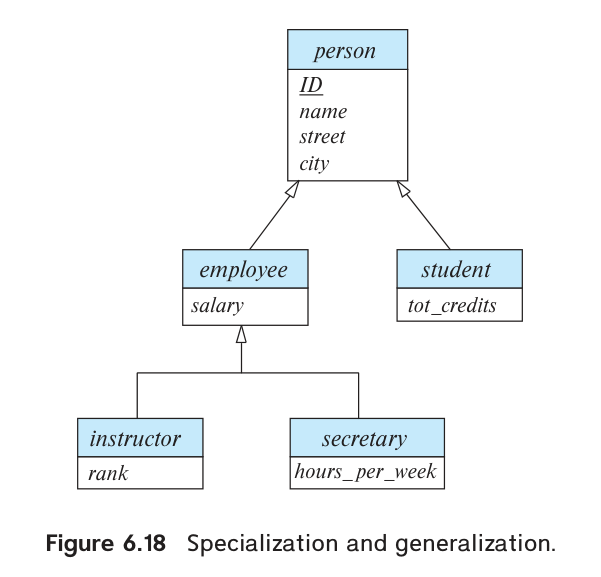
图6.18 特化与概化。
图中文字：person：人员；employee：雇员；student：学生；instructor：教师；secretary：秘书；ID：标识号；name：姓名；street：街道；city：城市；salary：工资；tot_credits：总学分；rank：职称；hours_per_week：每周工作小时数。
译注： 图6.18使用 tot_credits，正文使用 tot_cred，均表示总学分。
6.8.2 概化
从最初的实体集出发，逐层细分为实体子组，是一种自顶向下的设计过程，它把实体间的差异明确表示出来。设计也可以自底向上进行：根据共同特征，把多个实体集合并为一个高层实体集。例如，数据库设计者可能最先识别出：
- instructor 实体集，属性为 instructor_id、instructor_name、instructor_salary、rank。
- secretary 实体集，属性为 secretary_id、secretary_name、secretary_salary、hours_per_week。
instructor 和 secretary 实体集存在相似之处：两者都有一些概念上相同的属性，即标识符、姓名和工资。这种共性可以用概化（generalization）表达；概化是高层实体集与一个或多个低层实体集之间的包含联系。本例中，employee 是高层实体集，instructor 和 secretary 是低层实体集。两个低层实体集中概念相同的属性，原来采用了不同名称。要建立概化，必须为这些属性取共同名称，并用高层实体 person 表示。可以使用6.8.1节示例中的属性名 ID、name、street、city。
译注： 本段前半部分由 instructor 和 secretary 概化出 employee，共同属性是标识符、姓名、工资；后半部分却转用 person 及其地址属性。原文混用了两个层级，此处保留其叙述。
高层实体集和低层实体集也分别称为超类和子类。person 实体集是 employee 和 student 两个子类的超类。
在实际使用中，概化就是特化的逆过程。为一个组织设计 E-R 模式时，会结合使用这两种过程。在 E-R 图本身的表示中，并不区分特化和概化。随着设计模式逐步完整表达数据库应用及用户需求，可以区分出新的实体表示层次（特化），也可以综合出新的层次（概化）。两种方法的差别，体现在起点和总体目标上。
特化从一个实体集出发，通过创建不同的低层实体集，强调集合内实体之间的差异。这些低层实体集可以具有某些属性，或者参与某些联系，而这些属性和联系并不适用于高层实体集中的所有实体。设计者采用特化，正是为了表示这种区别性特征。如果 student 和 employee 与 person 实体的属性完全相同，参与的联系也完全相同，就没有必要对 person 实体集特化。
概化始于发现多个实体集具有共同特征，即它们由相同的属性描述，并参与相同的联系集。根据这些共性，概化将它们综合为一个高层实体集。概化强调低层实体集之间的相似性，隐藏它们的差异；由于共享属性无须重复表示，也使表示更加精简。
6.8.3 属性继承
特化与概化所产生的高层、低层实体具有一项重要性质：属性继承。我们说，低层实体集继承高层实体集的属性。例如，student 和 employee 继承 person 的属性。因此，student 由 ID、name、street、city，以及额外的 tot_cred 描述；employee 由 ID、name、street、city，以及额外的 salary 描述。属性继承适用于低层实体集的所有层次。instructor 和 secretary 是 employee 的子类，除了继承 employee 的 salary，还从 person 继承 ID、name、street、city。
低层实体集（子类）还会继承高层实体集（超类）对联系集的参与。与属性继承一样，联系参与的继承也适用于低层实体集的所有层次。例如，假设 person 实体集通过 person_dept 联系与 department 关联，那么作为 person 子类的 student、employee、instructor、secretary，也隐式参与与 department 之间的 person_dept 联系。这些实体集可以参与 person 实体集所参与的任何联系。
无论 E-R 模型的某一部分是通过特化还是概化得到的，结果基本相同：
- 一个高层实体集，其属性和联系适用于它的所有低层实体集。
- 若干低层实体集，各自具有仅适用于该低层实体集的区别性特征。
下面虽然经常只提到概化，但所讨论的性质同样适用于这两种过程。
图6.18展示了一个实体集层次结构。employee 是 person 的低层实体集，同时又是 instructor 和 secretary 的高层实体集。在层次结构中，一个实体集至多只能作为低层实体集参与一个 ISA 联系，也就是说，图中的实体集只有单继承。如果一个实体集在多个 ISA 联系中都是低层实体集，就具有多继承，形成的结构称为格结构（lattice）。
6.8.4 特化的约束
为了更准确地为一个组织建模，数据库设计者可以对某个概化或特化施加约束。
前面介绍过一种特化约束，它规定特化是不相交的还是重叠的。另一种是完备性约束：它规定高层实体集中的实体，是否必须属于该概化或特化中的至少一个低层实体集。约束可以是以下两种之一：
- 完全特化或概化。每个高层实体都必须属于某个低层实体集。
- 部分特化或概化。某些高层实体可以不属于任何低层实体集。
默认采用部分特化。要在 E-R 图中指定完全特化，可以加上关键字 total，并用虚线把它连接到所约束的空心箭头（对于完全特化），或连接到所约束的一组空心箭头（对于重叠特化）。
译注： 前一个括号原文写 total specialization；按这里一个箭头与一组箭头的对照，前者对应不相交特化。两种情况下都在用 total 指明完全性。
如果大学无须表示既非学生又非雇员的人员，那么 person 到 student 或 employee 的特化就是完全特化。如果大学需要表示这样的人，特化就是部分特化。
完备性约束与不相交约束彼此独立。因此，特化可以是部分且重叠、部分且不相交、完全且重叠，或完全且不相交。
施加于概化或特化的约束，还会带来相应的插入和删除要求。例如，存在完全性约束时，向高层实体集插入的实体，也必须插入至少一个低层实体集。从高层实体集中删除一个实体时，也必须从它所属的全部相关低层实体集中删除。
6.8.5 聚集
E-R 模型的一项局限，是无法表达联系之间的联系。为了说明为什么需要这种结构，再看前面介绍过的 instructor、student、project 之间的三元联系 proj_guide（见图6.6）。
现在假设，指导学生做项目的每位教师，每月都要提交一份评价报告。把报告建模为 evaluation 实体，主键为 evaluation_id。为了记录一份评价对应哪个 (student, project, instructor) 组合，可以在 instructor、student、project、evaluation 之间创建四元联系集 eval_for。（这里需要四元联系。例如，若只建立 student 与 evaluation 的二元联系，就无法表示一份评价对应哪个 (project, instructor) 组合。）使用基本 E-R 建模结构，得到图6.19中的 E-R 图。为简明起见，省略了实体集的属性。
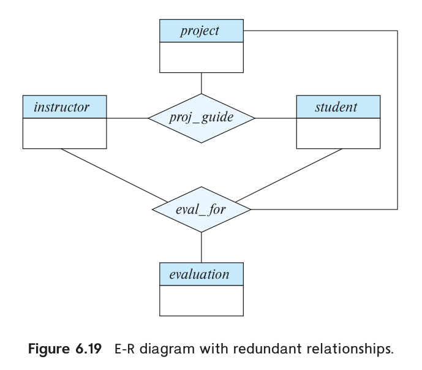
图6.19 包含冗余联系的 E-R 图。
图中文字：instructor：教师；student：学生；project：项目；evaluation：评价；proj_guide：项目指导联系；eval_for：评价对应的指导联系。
proj_guide 和 eval_for 这两个联系集，似乎可以合并为一个联系集。但不能这样合并，因为某些 instructor、student、project 组合可能尚无对应的评价。
不过，这张图包含冗余信息：eval_for 中的每个 instructor、student、project 组合，都必须也出现在 proj_guide 中。如果把 evaluation 建模为值，就可以把它作为 proj_guide 联系集的一个多值复合属性。但如果评价还要与其他实体关联，这种方案可能就不适用。例如，每份评价报告可能还关联一名秘书，由秘书负责报告的后续处理，以发放奖学金。
对于刚才描述的情况，最佳建模方法是使用聚集（aggregation）。聚集是一种抽象方法，将联系视为高层实体。在本例中，把关联 instructor、student、project 三个实体集的 proj_guide 联系集，视为名为 proj_guide 的高层实体集。处理它的方式，与处理其他实体集相同。这样就能在 proj_guide 与 evaluation 之间创建二元联系 eval_for，表示评价对应哪个 (student, project, instructor) 组合。图6.20展示了一种表示这种情况的常用聚集记法。
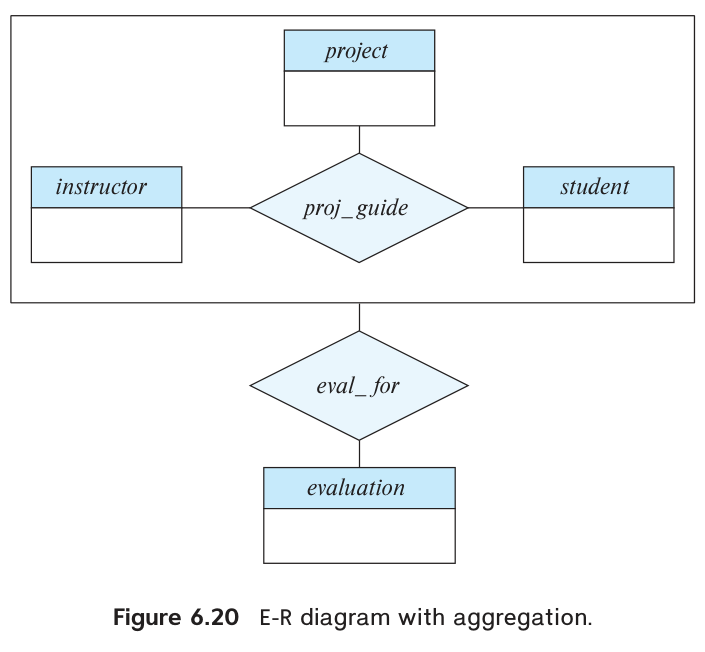
图6.20 包含聚集的 E-R 图。
图中文字：instructor：教师；student：学生；project：项目；evaluation：评价；proj_guide：项目指导联系；eval_for：评价对应的指导联系。大矩形将 proj_guide 及参与实体集聚集为一个高层实体集。
6.8.6 转换为关系模式
现在可以说明如何把扩展的 E-R 特性转换为关系模式。
6.8.6.1 概化的表示
对于包含概化的 E-R 图，有两种设计关系模式的方法。讨论仍以图6.18中的概化为例，但只保留第一层低层实体集，即 employee 和 student，以简化说明。假定 ID 是 person 的主键。
-
为高层实体集创建一个模式。对于每个低层实体集，创建一个模式，包含该实体集的每个属性，并包含高层实体集主键的每个属性。这样，对于图6.18的 E-R 图，忽略 instructor 和 secretary 后，得到三个模式：
person(ID, name, street, city)
employee(ID, salary)
student(ID, tot_cred)
高层实体集的主键属性，成为高层实体集及所有低层实体集对应模式的主键属性，在上面的示例中以下划线标出。
此外，还要在低层实体集对应的关系上创建外键约束，让其主键属性参照高层实体集所生成关系的主键。在上例中，employee 的 ID 参照 person 的主键，student 同样如此。
-
如果概化既不相交又完全，即没有实体同时属于高层实体集之下的两个直接子类，且高层实体集中的每个实体都属于某个低层实体集，就可以采用另一种表示。此时，不为高层实体集创建模式；为每个低层实体集创建模式，包含该实体集的每个属性，以及高层实体集的每个属性。于是，对于图6.18的 E-R 图，得到两个模式：
employee(ID, name, street, city, salary)
student(ID, name, street, city, tot_cred)
这两个模式都以 ID 为主键，它也是高层实体集 person 的主键属性。
译注： 第二种方法增加了“不相交且完全”的假设；图6.18原图允许 student 与 employee 重叠，不能直接在原约束下套用该方法。
第二种方法的一个缺点，出现在外键约束的定义上。假设有一个涉及 person 实体集的联系集 R。采用第一种方法，从联系集创建关系模式 R 时，可以同时在 R 上定义参照 person 模式的外键约束。采用第二种方法时，却没有一个统一的关系可供 R 的外键参照。为了避免这个问题，需要创建 person 关系模式，至少包含 person 实体的主键属性。
如果对重叠概化采用第二种方法，有些值就会被不必要地重复存储。例如，一个人同时是雇员和学生时，street 和 city 的值就会存储两遍。
如果概化不相交但不完全，也就是说，有些人既非雇员又非学生，就需要增加一个模式：
person(ID, name, street, city)
用它表示这些人。不过，上述外键约束问题仍然存在。为了解决它，假设还在 person 关系中表示雇员和学生。这样，学生的 name、street、city 会同时存储在 person 和 student 中，雇员的相同信息则会同时存储在 person 和 employee 中，造成冗余。这提示我们，可以只在 person 中存储 name、street、city，并从 student 和 employee 中删除这些信息。这样做得到的，恰好就是前面介绍的第一种方法。
6.8.6.2 聚集的表示
为包含聚集的 E-R 图设计模式，方法很直接。考虑图6.20：eval_for 联系集连接 proj_guide 的聚集与 evaluation 实体集，其模式应包含 evaluation 实体集主键和 proj_guide 联系集主键中的每个属性。如果 eval_for 有描述性属性，也应全部包含。然后按照已经定义的规则，转换聚集实体集内部的联系集和实体集。
前面为联系集创建主键和外键约束的规则，同样适用于涉及聚集的联系集，只需像处理普通实体集一样处理聚集。聚集的主键，就是定义它的联系集的主键。聚集本身无须单独创建关系，直接使用定义它的联系所生成的关系即可。
6.9 实体—联系设计中的问题
实体集和联系集的概念没有严格划定边界，同一组实体及其联系，可以用多种方式定义。本节考察 E-R 数据库模式设计中的基本问题。6.11节将进一步讨论设计过程。
6.9.1 E-R 图中的常见错误
建立 E-R 模型时，一个常见错误，是把某实体集的主键作为另一实体集的属性，没有建立相应联系。例如，在大学 E-R 模型中，不应像图6.21a那样把 dept_name 作为 student 的属性，尽管 student 关系模式确实具有该属性。在 E-R 模型中，应使用 stud_dept 联系表示这项信息：这样能显式表示 student 与 department 的联系。如果同时保留 dept_name 属性和 stud_dept 联系，就会重复表示信息。
另一种相关错误，是把参与实体集的主键属性，指定为联系集的属性。例如，ID（student 的主键属性）和 ID（instructor 的主键）不应作为 advisor 联系的属性。这些主键属性已经隐含在联系集中，无须再显式列出。6
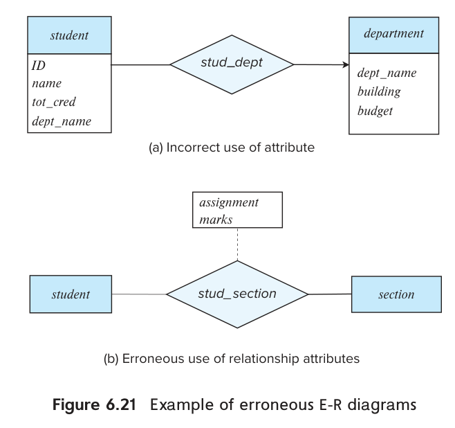
图6.21 错误 E-R 图的示例。
图中文字：(a) 错误使用属性；(b) 错误使用联系属性。student：学生；department：院系；section：教学班；stud_dept：学生所属院系；stud_section：学生与教学班的联系；ID：学号；name：姓名；tot_cred：总学分；dept_name：院系名；building：楼宇；budget：预算；assignment：作业；marks：分数。
第三种常见错误，是在需要多值属性时，使用带单值属性的联系。例如，假设要表示学生在某个教学班不同作业中的得分。一种错误做法，是像图6.21b那样，给 takes 联系添加 assignment 和 marks 两个属性。这样，对于一对给定的学生与教学班，只能表示一次作业，因为联系实例必须由参与联系的 student 和 section 实体唯一标识。
图6.21c所示问题的一种解决方案见图6.22a：将 assignment 建模为由 section 标识的弱实体，并在 assignment 与 student 之间添加 marks_in 联系，联系具有 marks 属性。图6.22d给出另一种方案：在 takes 中使用多值复合属性 {assignment_marks}，其中 assignment_marks 由 assignment 和 marks 两个分量组成。在这种情况下，把作业建模为弱实体更合适，因为还能记录满分、截止日期等其他作业信息。
译注： 原文这里的“图6.21c”和“图6.22a”，应分别为图6.21b和图6.22c。图6.21b及6.22d把选课联系标为 stud_section，正文则称 takes。
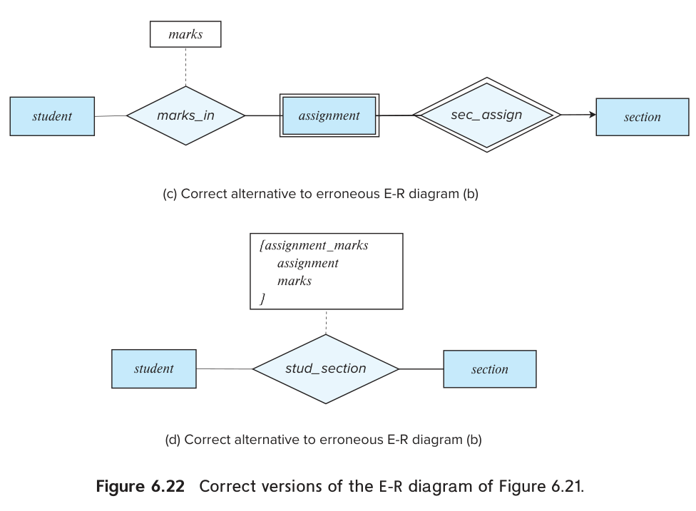
图6.22 图6.21的正确版本。
图中文字：(c)、(d) 均为错误 E-R 图 (b) 的正确替代方案。student：学生；section：教学班；assignment：作业；sec_assign：教学班的作业；marks_in：学生的作业得分联系；marks：分数；stud_section：选课联系；assignment_marks：由 assignment 和 marks 组成的多值复合属性。
当 E-R 图大到无法画在一张图中时，可以分成几部分，每部分展示 E-R 模型的一部分。此时，同一实体集可能需要出现在多个页面上。如6.2.2节所述，实体集的属性只应在第一次出现时画出一次。以后再次出现时，应省略全部属性，避免在多个位置重复相同信息而产生不一致。
6.9.2 使用实体集还是属性
考虑为 instructor 实体集添加 phone_number 属性（图6.23a）。也可以认为，电话本身就是一个实体，具有 phone_number 和 location 两个属性。location 可以是电话所在的办公室或住宅，移动电话则可用 mobile 这个值表示。采用这种观点时，可以创建以下结构：
- phone 实体集，属性为 phone_number 和 location。
- inst_phone 联系集，表示教师与其电话之间的关联。
这个方案见图6.23b。
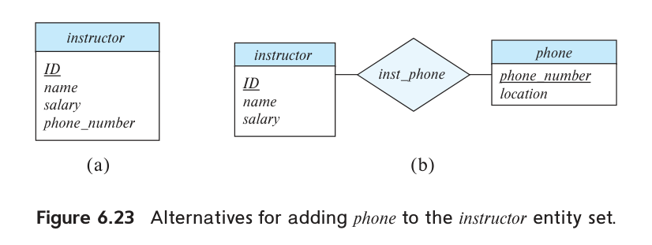
图6.23 为 instructor 添加电话的两种方案。
图中文字：instructor：教师；ID：教师号；name：姓名；salary：工资；phone_number：电话号码；phone：电话；location：位置；inst_phone：教师与电话的联系。
那么，这两种 instructor 定义的主要区别是什么？将电话作为 phone_number 属性，意味着每位教师恰好有一个电话号码。将电话作为 phone 实体，则允许一位教师关联多个电话号码，也允许一个都没有。不过，把 phone_number 定义为多值属性，同样很容易让每位教师拥有多个电话。
主要区别在于：如果还要保存电话的其他信息，例如位置、类型（移动电话、IP 电话或普通电话），或所有共用该电话的人，把电话视为实体就能更好地建模。因此，把 phone 作为实体比作为属性更通用；当这种通用性有用时，就适合采用实体。
相比之下，把教师的 name 属性视为实体就不合适。与电话不同，很难认为姓名本身是一个独立实体。因此，将 name 作为 instructor 实体集的属性是恰当的。
于是自然产生两个问题：什么应当作为属性，什么应当作为实体集？这两个问题没有简单答案。区别主要取决于所建模的现实组织的结构，以及相关属性的语义。
6.9.3 使用实体集还是联系集
一个对象最适合表示为实体集还是联系集，有时并不明确。在图6.15中，我们用 takes 联系集表示学生选修某门课程的某个教学班。另一种做法是假定：学生每选修一门课，就产生一条选课登记记录；再用实体集表示这些记录，称为 registration。每个 registration 实体恰好关联一名学生和一个教学班，因此需要两个联系集，分别连接选课登记记录与学生、选课登记记录与教学班。图6.24保留了图6.15的 section、student 实体集，用一个实体集和两个联系集替换 takes：
- registration：表示选课登记记录的实体集。
- section_reg：关联 registration 与 course 的联系集。
- student_reg：关联 registration 与 student 的联系集。
图中用双线表示 registration 实体完全参与这些联系。
译注： 上面 section_reg 的关联对象，原文写 course；由本段说明和图6.24可知，应为 section。
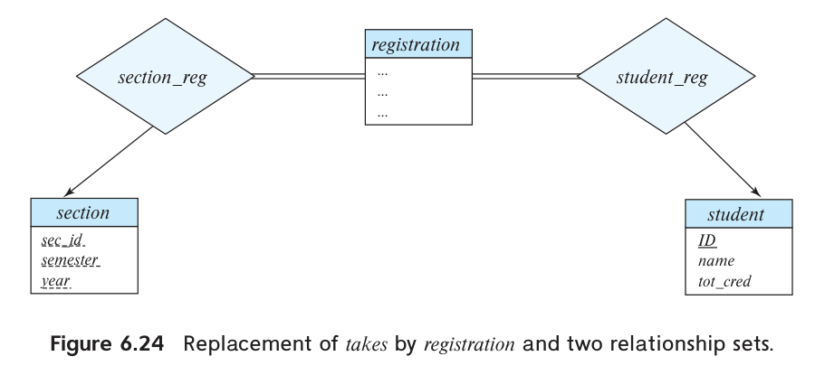
图6.24 用 registration 和两个联系集替换 takes。
图中文字：registration：选课登记；section：教学班；student：学生；section_reg：教学班与登记的联系；student_reg：学生与登记的联系；sec_id：教学班号；semester：学期；year：年份；ID：学号；name：姓名；tot_cred：总学分；省略号表示此处省略的属性。
图6.15和图6.24的方案都能准确表示大学的信息，但 takes 的表示更加简洁，通常更合适。不过，如果教务处还要为选课登记记录关联其他信息，把它作为独立实体可能更好。
在决定使用实体集还是联系集时，可以采用一条指导原则：用联系集描述实体之间发生的动作。判断某些属性是否更适合用联系表示时，这种方法也有帮助。
6.9.4 使用二元联系集还是 n 元联系集
数据库中的联系常常是二元的。某些看起来并非二元的联系，用几个二元联系表达可能更合适。例如，可以建立三元联系 parent，把孩子与其母亲、父亲关联起来；也可以建立 mother 和 father 两个二元联系，分别把孩子与母亲、父亲关联起来。使用后者时，即使不知道父亲是谁，仍然能够记录孩子的母亲；如果使用三元联系 parent，就需要空值。在这种情况下，采用二元联系集更合适。
事实上，任何非二元联系集，即 n > 2 的 n 元联系集，都能用若干不同的二元联系集替代。为简明起见，考虑关联实体集 A、B、C 的抽象三元联系集 R。用实体集 E 替代 R，再创建图6.25中的三个联系集：
- RA：从 E 到 A 的多对一联系集。
- RB：从 E 到 B 的多对一联系集。
- RC：从 E 到 C 的多对一联系集。
要求 E 完全参与 RA、RB、RC。如果联系集 R 有属性，就把这些属性交给实体集 E；此外，还要为 E 创建一个专门的标识属性，因为必须能够根据属性值区分实体集中的不同实体。对 R 中的每个联系 (aᵢ, bᵢ, cᵢ)，在 E 中创建一个新实体 eᵢ，再分别向三个新联系集插入：
- 向 RA 插入 (eᵢ, aᵢ)。
- 向 RB 插入 (eᵢ, bᵢ)。
- 向 RC 插入 (eᵢ, cᵢ)。
这个过程可以直接推广到 n 元联系集。从概念上说，可以把 E-R 模型限制为只包含二元联系集。不过，这种限制并非总是合适。
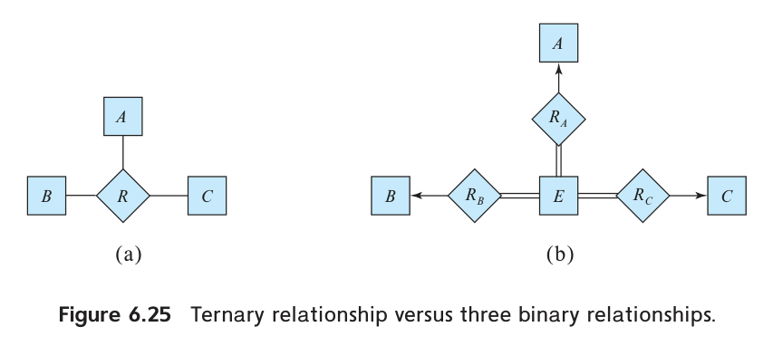
图6.25 三元联系与三个二元联系。
图中文字：(a) A、B、C 之间的三元联系 R；(b) 新实体集 E 分别通过 RA、RB、RC 与 A、B、C 关联。
- 为表示原联系集而新建的实体集，可能需要额外的标识属性。这个属性以及所需的额外联系集，会增加设计复杂度，也会增加整体存储需求（见6.7节）。
- n 元联系集能更清楚地表达多个实体共同参与同一个联系。
- 三元联系上的约束，可能无法转换为二元联系上的约束。例如，要求 R 从 A、B 到 C 为多对一，即每一对 A、B 实体至多关联一个 C 实体。仅用 RA、RB、RC 上的基数约束，无法表达这项要求。
考虑6.2.2节中关联 instructor、student、project 的 proj_guide 联系集。不能直接把它分成 instructor 与 project、instructor 与 student 之间的两个二元联系。那样只能记录教师 Katz 与学生 Shankar、Zhang 一起参与了项目 A、B，却无法记录准确的对应关系：Katz 与 Shankar 做项目 A，与 Zhang 做项目 B，并未与 Zhang 做项目 A，也未与 Shankar 做项目 B。
按照前面的方法创建一个新实体集，确实可以把 proj_guide 分解为二元联系，但这种表示不太自然。
6.10 数据建模的其他记法
用图形表示应用的数据模型，是数据库模式设计的重要组成部分。创建数据库模式既需要数据建模专家，也需要领域专家；后者熟悉应用需求，却未必熟悉数据建模。直观的图形表示有助于两类专家交流信息，因此很重要。
人们提出了多种数据建模记法，其中使用最广泛的是 E-R 图和 UML 类图。E-R 图没有统一的记法标准，不同书籍和 E-R 绘图软件采用的记法各不相同。
本节接下来介绍几种其他 E-R 图记法，以及 UML 类图记法。为了便于与这些记法比较，图6.26汇总了本书 E-R 图采用的符号。
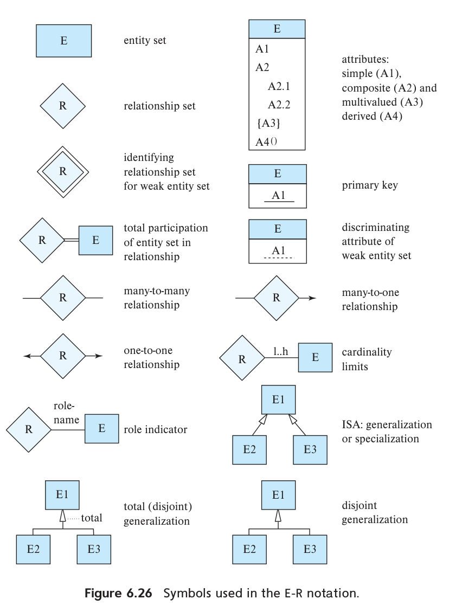
图6.26 本书 E-R 记法使用的符号。
图中文字：左列自上而下：实体集；联系集；弱实体集的标识联系集；实体集完全参与联系；多对多联系；一对一联系；角色标识；完全且不相交的概化。右列自上而下：属性（A₁ 简单、A₂ 复合、A₃ 多值、A₄ 派生）；主键；弱实体集的分辨属性；多对一联系；基数上下限；ISA 概化或特化；不相交概化。role-name：角色名；total：完全。
6.10.1 其他 E-R 记法
图6.27给出了几种广泛使用的其他 E-R 记法。表示实体属性的一种方式，是把属性写在椭圆中，再把椭圆连接到表示实体的矩形上；主键属性加下划线。这种记法见图的顶部。联系的属性也可以类似表示，把椭圆连接到表示联系的菱形上即可。
联系的基数约束也有多种表示方式，见图6.27。其中一种画法在图的左侧：在联系引出的边上标注 * 和 1，表示多对多、一对一、多对一联系。一对多与多对一对称，图中没有另画。
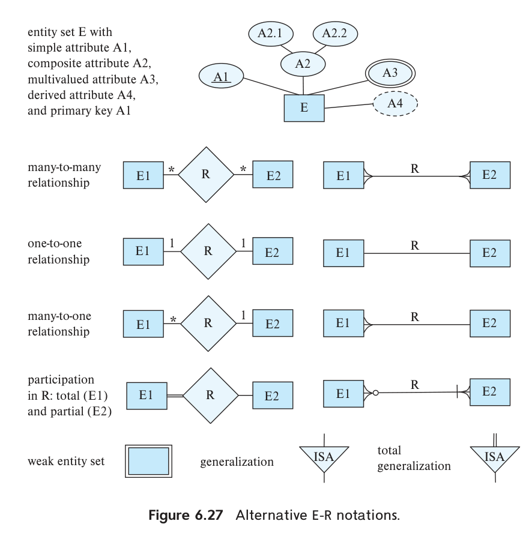
图6.27 其他 E-R 记法。
图中文字：顶部：实体集 E，带简单属性 A₁、复合属性 A₂、多值属性 A₃、派生属性 A₄，主键为 A₁。其余各行分别为多对多、一对一、多对一联系；E₁ 完全参与 R、E₂ 部分参与 R；弱实体集；概化；完全概化。左侧用菱形及 *、1，右侧采用乌鸦脚记法；ISA 表示概化或特化。
图6.27右侧给出另一种记法：联系集直接用实体集之间的连线表示，不使用菱形，因此只能表示二元联系。基数约束采用图中的“乌鸦脚”记法。对于 E₁ 与 E₂ 之间的联系 R，两端都有乌鸦脚表示多对多；只有 E₁ 一端有乌鸦脚，表示从 E₁ 到 E₂ 为多对一。这种记法用竖线表示完全参与。需要留意：在 E₁ 与 E₂ 的联系 R 中，如果 E₁ 完全参与 R，竖线要画在对端，也就是 E₂ 旁边。部分参与则用圆圈表示，同样画在对端。
图6.27底部给出了概化的另一种表示，用三角形替代空心箭头。
本书从最早的版本到第5版，都用椭圆表示属性，用三角形表示概化，如图6.27所示。用椭圆表示属性、用菱形表示联系，与 Chen 最初提出 E-R 建模概念的论文所用图形相近。现在，这种记法称为 Chen 记法。
美国国家标准与技术研究院于1993年制定了 IDEF1X 标准。IDEF1X 使用乌鸦脚记法，在联系的边上用竖线表示完全参与，用空心圆表示部分参与，此外还有本书未列出的其他记法。
随着统一建模语言 UML（见6.10.2节）的使用越来越广泛，我们更新了 E-R 记法，使它更接近 UML 类图；两者的对应关系将在6.10.2节说明。与原来的记法相比，新记法的属性表示更紧凑，既更接近 UML 类图，也更接近许多 E-R 建模工具采用的记法。
译注： 原文此处将 UML 展开为 Unified Markup Language，复习术语中又写作 United Modeling Language。正确名称是6.10.2节给出的 Unified Modeling Language，即统一建模语言。
构建 E-R 图的工具有很多，各有自己的记法变体。一些工具还允许在多种 E-R 记法之间选择。相关工具见本章末尾的“工具”一节。
E-R 图中的实体集，与由它创建的关系模式有一个重要区别：关系模式中用于表示 E-R 联系的属性，例如 instructor 中的 dept_name，不会出现在 E-R 图的实体集中。一些数据建模工具允许设计者在同一实体的两个视图之间切换：实体视图不包含这些属性，关系视图则包含。
6.10.2 统一建模语言 UML
实体—联系图有助于为软件系统的数据表示部分建模。不过，数据表示只是整个系统设计的一部分。其他部分还包括用户与系统的交互模型、系统各功能模块及模块间交互的规定等。统一建模语言（Unified Modeling Language，UML）是在对象管理组织（Object Management Group，OMG）主持下制定的标准，用于为软件系统的各个组成部分建立规格说明。UML 的部分组成如下：
- 类图。类图与 E-R 图相似。本节稍后会举例介绍类图的部分特性，以及它们与 E-R 图的关系。
- 用例图。展示用户与系统的交互，重点是用户执行任务的步骤，例如取款或选课。
- 活动图。描述任务在系统各组成部分之间的流转。
- 实现图。从软件组件和硬件组件两个层面，展示系统的组成及其相互连接。
这里不详细介绍 UML 的所有部分，仅通过示例说明与数据建模有关的特性。UML 的参考资料见本章末尾的“延伸阅读”。
图6.28展示了一些 E-R 图结构及其等价的 UML 类图结构，下面逐一说明。UML 为对象建模，E-R 则为实体建模。对象与实体相似，具有属性，此外还提供一组称为“方法”的函数，可以调用它们，根据对象属性计算值或更新对象本身。类图除了描绘属性，还能描绘方法。8.2节将介绍对象。UML 不支持复合属性和多值属性，派生属性则相当于无参数的方法。类支持封装，因此 UML 允许在属性和方法前加 +、− 或 #，分别表示公有、私有和受保护访问。私有属性只能在该类的方法中使用；受保护属性只能在该类及其子类的方法中使用。熟悉 Java、C++ 或 C# 的读者，应该对这些概念并不陌生。
在 UML 术语中，联系集称为“关联”（association）；为与 E-R 术语保持一致，这里仍称联系集。UML 中的二元联系集，用连接两个实体集的一条线表示，联系集名称写在线旁。还可以在线上靠近实体集的位置写角色名，说明该实体集在联系集中扮演的角色。另一种方式是把联系集名称及属性写在一个矩形框里，再用虚线把框连到表示联系集的线上。随后，可以像处理 E-R 图中的聚集一样，把这个框当作实体集，使它参与与其他实体集的联系。
从1.3版开始，UML 支持非二元联系，采用与 E-R 图相同的菱形记法。更早版本无法直接表示非二元联系，必须先用6.9.4节的方法转换为二元联系。UML 也允许二元联系使用菱形记法，不过多数设计者使用连线记法。
UML 的基数约束同样采用 l..h 的形式，l 表示实体参与联系数目的下限，h 表示上限。但需要留意，如图6.28所示，约束的标注位置与本书 E-R 图恰好相反。E₂ 一侧标 0..*，E₁ 一侧标 0..1，表示每个 E₂ 实体至多参与一个联系，每个 E₁ 实体则可参与多个联系；也就是说，联系从 E₂ 到 E₁ 为多对一。
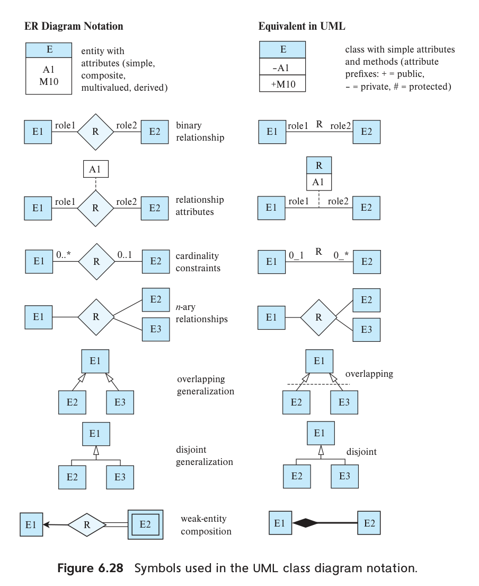
图6.28 UML 类图记法的符号。
图中文字：左列为 E-R 图记法，右列为等价 UML 表示。各行依次为：带属性的实体（简单、复合、多值、派生）与带简单属性及方法的类；二元联系；联系属性；基数约束；n 元联系；重叠概化；不相交概化；弱实体与组合。属性前缀 + 表示公有，− 表示私有，# 表示受保护；A₁ 表示属性，M₁() 表示方法；role1、role2：角色1、角色2；overlapping：重叠；disjoint：不相交。
边上还可以写单个值，例如 1 或 *。单独的 1 等价于 1..1，* 等价于 0..*。UML 支持概化，记法与本书 E-R 记法基本相同，包括不相交概化和重叠概化的表示。
UML 类图还包含其他一些记法，大致对应前面介绍的 E-R 记法。在两个实体集之间的连线一端，放置一个小实心菱形，就表示 UML 的“组合”（composition）。图6.28中 E₂ 与 E₁ 的组合联系，表示 E₂ 在存在上依赖于 E₁；这大致相当于，把 E₂ 指定为在存在上依赖于标识实体集 E₁ 的弱实体集。（UML 中的“聚合”，英文同样是 aggregation，表示组合的一种变体：E₂ 包含在 E₁ 中，但可以独立存在，用小空心菱形表示。）
UML 类图还提供接口等面向对象语言特性的表示记法。有关 UML 类图的更多资料，见“延伸阅读”。
6.11 数据库设计的其他方面
本章大量讨论模式设计，可能使人误以为数据库设计只有模式设计这一项。实际上，还有其他若干需要考虑的方面，后续章节将详细讨论，这里先作简要介绍。
6.11.1 功能需求
所有组织都会规定其应用应支持哪些功能，包括更新数据的事务，以及按所需方式查看数据的查询。设计者除了规划功能，还必须规划支持这些功能的接口。
并非所有用户都有权查看全部数据或执行全部事务。对任何组织应用来说，授权机制都很重要。可以在数据库层使用数据库的授权功能，也可以在较高层的功能或接口上授权，规定谁可以使用哪些功能或接口。
6.11.2 数据流与工作流
数据库应用通常属于更大的组织应用，它既与数据库系统交互，也与各种专门的应用交互。例如，出差员工返回后创建差旅报销单，可能使用专门的软件；随后，报销单传给员工的经理，可能还要传给更高层经理，最终到达会计部门付款。付款时，它会与组织的会计信息系统交互。
工作流（workflow）指上述这类流程中数据与任务的组合。工作流在用户间流转，用户执行相应任务，在这个过程中会与数据库系统交互。数据库除了存储工作流处理的数据，还可能存储工作流自身的信息，包括它由哪些任务构成，以及如何在用户之间流转。工作流由此规定了一系列数据库查询和更新，数据库设计时可以把它们纳入考虑。换句话说，为组织建模，既需要理解数据的语义，也需要理解使用这些数据的业务流程。
6.11.3 模式演化
数据库设计通常并非一次性工作。组织的需求不断发展，需要存储的数据也随之变化。在最初的数据库设计阶段，或应用开发过程中，设计者可能发现，概念模式、逻辑模式或物理模式都需要修改。模式变更可能影响数据库应用的各个方面。良好的设计应预见组织未来的需求，使模式在需求变化时只需尽量少的修改。
应当区分预计长期不变的基本约束，与预计可能改变的约束。例如，教师号唯一标识一名教师，是基本约束。大学也可能规定教师只能属于一个院系；日后允许联合聘任时，这项规定就会变化。如果数据库设计只允许教师属于一个院系，支持联合聘任可能需要大幅修改。只要每位教师仍然只有一个主要所属院系，就可以增加一个联系表示联合聘任，无须修改 instructor 关系；如果政策允许多个主要所属院系，就可能需要更大的设计变更。良好的设计应考虑当前规定，也应避免或尽量减少那些预期会发生、或有合理可能发生的变化所需的修改。
最后，数据库设计在两个意义上都面向人：系统的最终用户是人，即使数据库与最终用户之间隔着应用；设计者还需要与应用领域专家充分交流，理解应用的数据需求。所有与数据有关的人都有需求和偏好。只有将这些需求和偏好纳入考虑，数据库设计与部署才能在组织中取得成功。
6.12 小结
- 数据库设计主要包括数据库模式的设计。实体—联系（E-R）数据模型广泛用于数据库设计，以直观的图形表示数据、联系与约束。
- E-R 模型主要用于数据库设计过程。它通过描述组织的模式来帮助设计数据库。这种模式表示数据库的整体逻辑结构，可用 E-R 图以图形形式表达。
- 实体是现实世界中存在、且能与其他对象区分的对象。为每个实体关联一组描述它的属性，就能表达这种区别。
- 联系是若干实体之间的关联。联系集是同类联系的集合，实体集是同类实体的集合。
- 超键、候选键、主键既适用于关系模式，也适用于实体集和联系集。确定联系集的主键时需要谨慎，因为它由一个或多个参与实体集的属性构成。
- 映射基数表示通过一个联系集，一个实体可以与多少个其他实体关联。
- 自身属性不足以构成主键的实体集，称为弱实体集；具有主键的实体集，称为强实体集。
- E-R 模型的各种特性，为设计者提供了多种选择，以恰当地表示所建模的组织。某些概念和对象，可以表示为实体、联系或属性；组织整体结构的某些方面，则可能适合用弱实体集、概化、特化或聚集描述。设计者常常需要权衡：采用简单紧凑的模型，还是采用更精确但更复杂的模型。
- E-R 图规定的数据库设计，可以表示为一组关系模式。对数据库中的每个实体集、每个联系集，都有一个唯一的关系模式，以相应实体集或联系集的名称命名。这是从 E-R 图导出关系数据库设计的基础。
- 特化与概化定义了高层实体集与一个或多个低层实体集之间的包含联系。特化是取高层实体集的一个子集，形成低层实体集；概化是对两个或多个不相交的低层实体集求并，形成高层实体集。低层实体集继承高层实体集的属性。
- 聚集是一种抽象方法，把联系集及其关联的实体集视为高层实体集，使其能够参与联系。
- E-R 设计需要谨慎，要避免多种常见错误。表示组织的某个方面时，还要在实体集、联系集和属性之间作出选择；选择是否恰当，可能取决于该组织特有的细微差别。
- UML 是一种流行的建模语言。UML 类图广泛用于类建模，也用于通用的数据建模。
复习术语
- 设计过程
- 概念设计
- 逻辑设计
- 物理设计
- 实体—联系（E-R）数据模型
- 实体与实体集
- 简单属性与复合属性
- 单值属性与多值属性
- 派生属性
- 键
- 超键
- 候选键
- 主键
- 联系与联系集
- 二元联系集
- 联系集的度
- 描述性属性
- 超键、候选键与主键
- 角色
- 递归联系集
- E-R 图
- 映射基数
- 一对一联系
- 一对多联系
- 多对一联系
- 多对多联系
- 完全参与与部分参与
- 弱实体集与强实体集
- 分辨属性
- 标识联系
- 特化与概化
- 聚集
- 设计选择
- 统一建模语言（UML）
实践习题
6.1 为一家汽车保险公司构建 E-R 图。每名客户拥有一辆或多辆汽车，每辆汽车可以有零条或任意多条事故记录。每张保单承保一辆或多辆汽车，并关联一次或多次保费付款。每次付款对应一个特定时期，记录应付款日期和实际收到付款的日期。
6.2 某数据库包含大学模式中的 student、course、section 实体集，还记录学生在不同教学班的不同考试中取得的分数。
(a) 构建 E-R 图，把考试建模为实体，并在设计中使用三元联系。
(b) 构建另一种 E-R 图，在 student 与 section 之间只使用一个二元联系。确保某名学生与某个教学班之间只有一个联系，同时能够表示这名学生在不同考试中的分数。
6.3 设计 E-R 图，记录你喜爱的运动队的得分统计。应存储参加过的比赛、每场比分、每场上场的队员，以及每名队员在各场比赛中的个人得分统计。汇总统计应建模为派生属性，并解释其计算方式。
6.4 在一张 E-R 图中，同一实体集出现多次，其属性也在多个位置重复出现。为什么这种冗余是不良做法，应当避免？
6.5 可以把 E-R 图视为图论中的图。下面的情况对组织模式的结构分别意味着什么？
(a) 图不连通。
(b) 图中存在环。
6.6 考虑用图6.29b中的二元联系，表示图6.29a中的三元联系；图中省略属性。
(a) 给出 E、A、B、C、RA、RB、RC 的一个简单实例，使它无法对应 A、B、C、R 的任何实例。
(b) 修改图6.29b，添加约束，保证满足这些约束的 E、A、B、C、RA、RB、RC 的每个实例，都对应 A、B、C、R 的某个实例。
(c) 修改上述转换方法，使其能够处理三元联系的完全参与约束。
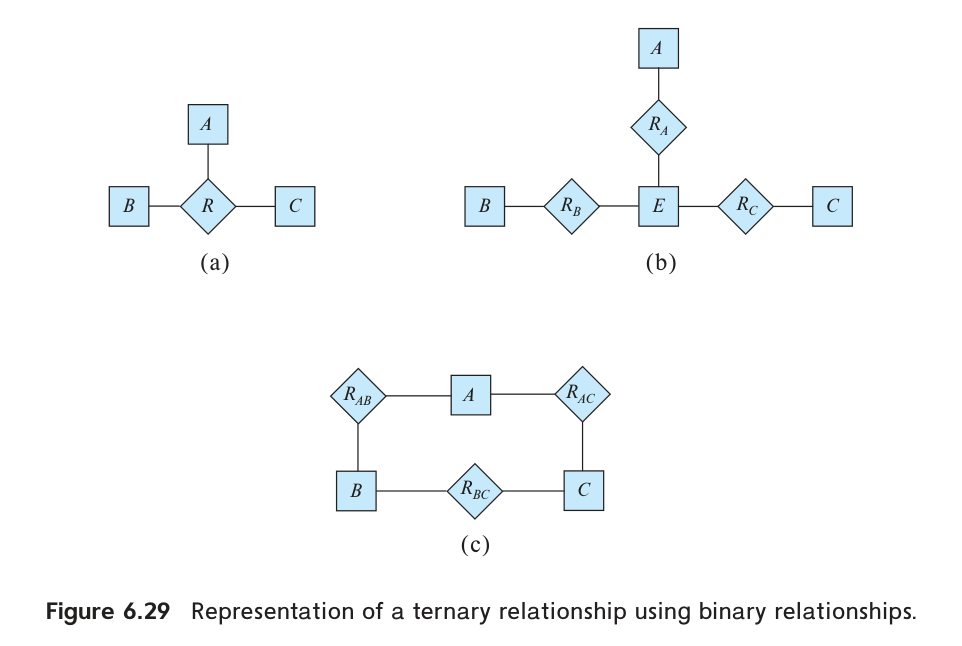
图6.29 用二元联系表示三元联系。
图中文字：(a) 原三元联系 R；(b) 引入 E，分别通过 RA、RB、RC 关联 A、B、C；(c) 用 RAB、RAC、RBC 两两连接 A、B、C。
6.7 只要把标识实体集的主键属性加入弱实体集的属性，就能将弱实体集变为强实体集。简述这样做会产生什么冗余。
6.8 考虑从多对一联系集 sec_course 生成的 sec_course 关系。在这个关系上创建的主键和外键约束，能否保证多对一基数约束？解释原因。
6.9 假设 advisor 联系集为一对一。需要在 advisor 关系上增加哪些约束，才能保证一对一基数约束？
6.10 考虑实体集 A 与 B 之间的多对一联系 R。假设将 R 所生成的关系与 A 所生成的关系合并。在 SQL 中，参与外键约束的属性可以为空。说明如何利用 SQL 的 not null 约束，保证 A 完全参与 R。
6.11 在 SQL 中，外键只能参照目标关系的主键属性，或通过 unique 约束声明为超键的其他属性。因此，对于多对多联系集，或一对多联系集中的“一”端，仅使用所生成关系上的主键、外键和 not null 约束，无法保证完全参与约束。
(a) 解释原因。
(b) 说明如何使用复杂的 check 约束或断言（见4.4.8节），保证完全参与约束。（遗憾的是，目前广泛使用的数据库都不支持这些特性。）
6.12 考虑下面的概化与特化格结构，图中省略属性。
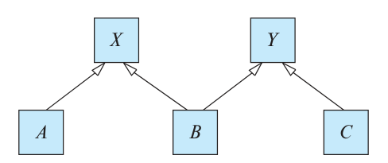
习题6.12的概化与特化格结构。
图中文字：A 是 X 的子类；B 同时是 X、Y 的子类；C 是 Y 的子类。
对实体集 A、B、C，说明它们如何继承高层实体集 X、Y 的属性。如果 X 的某个属性与 Y 的某个属性同名，应如何处理？
6.13 E-R 图通常表示组织在某一时刻的状态。现在希望跟踪时间变化，也就是数据随时间发生的变化。例如，Zhang 在2015年9月至2019年5月期间可能是学生；Shankar 在2018年5月至2018年12月期间，以及2019年6月至2020年1月期间，可能都由教师 Einstein 担任导师。实体或联系的属性值也会随时间变化，例如 course 的 title、credits，instructor 的 salary 乃至 name，以及 student 的 tot_cred。
可以采用以下方式为时间变化建模：定义一种新数据类型 valid_time，其值是一个时间区间或一组时间区间。然后为每个实体和联系关联一个 valid_time 属性，记录它有效的时期。区间结束时间可以是无穷大；例如，如果 Shankar 在2018年9月成为学生，现在仍然是学生，就可以把 Shankar 实体的 valid_time 区间结束时间表示为无穷大。同样，对于会随时间变化的属性，把它表示为一组值，每个值都有自己的 valid_time。
(a) 画出包含 student、instructor 实体及 advisor 联系的 E-R 图，并加入上述扩展，以跟踪时间变化。
(b) 将这个 E-R 图转换为一组关系。
可以看到，生成的关系相当复杂，编写 SQL 查询等工作会变得困难。更常见的另一种方法，是设计 E-R 模型时忽略时间变化，特别是属性值的时间变化；随后再修改 E-R 模型生成的关系，使其能够跟踪时间变化。
习题
6.14 解释主键、候选键、超键三个术语的区别。
6.15 为一家医院构建 E-R 图，医院有一组患者和一组医生。为每名患者关联一份记录，记载其接受的各项化验和检查。
6.16 扩展习题6.3的 E-R 图，为联赛中的所有队伍记录相同的信息。
6.17 解释弱实体集与强实体集的区别。
6.18 两个实体集 A、B 都有属性 X，也有其他属性，但那些属性名与本题无关。
(a) 如果两个 X 毫无关联，应如何改进设计？
(b) 如果两个 X 表示同一性质，且这一性质同时适用于 A 和 B，应如何改进设计？分别考虑三种情况：X 是 A 的主键，但不是 B 的主键；X 同时是 A 和 B 的主键；X 既不是 A 的主键，也不是 B 的主键。
6.19 只需添加适当属性，就可以把任何弱实体集转换为强实体集。那么，为什么还需要弱实体集？
6.20 为下面各题中的 E-R 图构造适当的关系模式：
(a) 习题6.1。
(b) 习题6.2。
(c) 习题6.3。
(d) 习题6.15。
6.21 图6.30是一个在线书店的 E-R 图。
(a) 假设书店增加蓝光光盘和可下载视频。同一作品可以只有一种格式，也可以同时提供两种格式，价格各不相同。画出表示这项扩展的 E-R 图，只需画与视频相关的部分。
(b) 扩展完整的 E-R 图，使购物篮能够包含图书、蓝光光盘和可下载视频的任意组合。
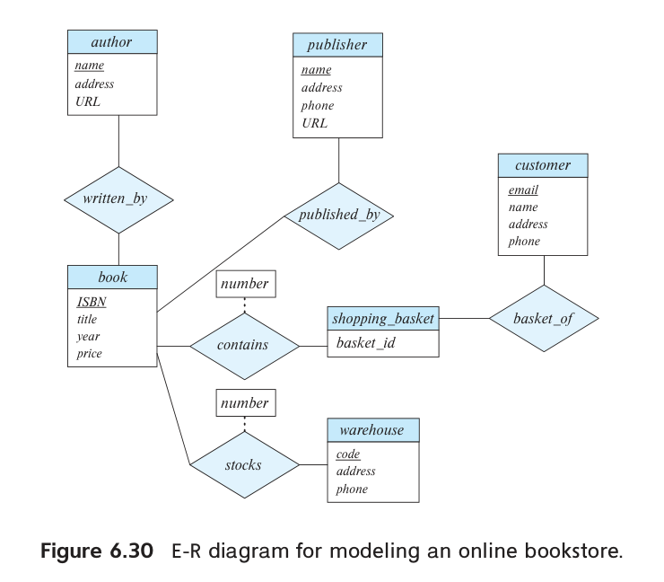
图6.30 在线书店的 E-R 图。
图中文字：author：作者；publisher：出版社；book：图书；customer：客户；shopping_basket：购物篮；warehouse：仓库。written_by：作者联系；published_by：出版联系；contains：购物篮包含的图书；basket_of：购物篮所属客户；stocks：库存联系。name：姓名或名称；address：地址；URL：网址；phone：电话；email：电子邮箱；ISBN：国际标准书号；title：书名；year：年份；price：价格；basket_id：购物篮号；code：仓库代码；number：数量。
6.22 为一家汽车公司设计数据库，供其经销商使用，以维护客户记录和经销商库存，并帮助销售人员订购汽车。
每辆汽车由车辆识别码（VIN）标识。每辆车都是该公司某品牌下的某一车型，例如 XF 是塔塔汽车旗下捷豹品牌的一个车型。每种车型可以提供多种选装配置，但某辆具体汽车可能只有其中一部分，也可能完全没有。数据库应存储车型、品牌、选装配置的信息，以及各经销商、客户和具体车辆的信息。
设计应包括 E-R 图、一组关系模式，以及主键、外键等约束的清单。
6.23 为一家全球包裹递送公司，例如 DHL 或 FedEx，设计数据库。数据库必须跟踪寄件客户和收件客户，有些客户同时具有两种身份。每个包裹都必须能被识别并追踪，因此数据库应存储包裹当前位置及历史位置。位置包括卡车、飞机、机场和仓库。
设计应包括 E-R 图、一组关系模式，以及主键、外键等约束的清单。
6.24 为一家航空公司设计数据库。数据库应跟踪客户及其预订、航班及其状态、各航班的座位分配，以及未来航班的时刻表和航线。
设计应包括 E-R 图、一组关系模式，以及主键、外键等约束的清单。
6.25 在6.9.4节中，用图6.29b中的二元联系表示了一个三元联系，原三元联系再次列于图6.29a。考虑图6.29c中的另一种方案。比较这两种用二元联系表示三元联系的方案，各有什么优缺点？
6.26 为一家机动车销售公司设计概化—特化层次结构。公司销售摩托车、轿车、厢式车和公共汽车。说明为什么把各属性放在所选层次，以及为什么不放在更高或更低的层次。
6.27 解释不相交约束与重叠约束的区别。
6.28 解释完全约束与部分约束的区别。
工具
许多数据库系统提供支持 E-R 图的数据库设计工具。这些工具帮助设计者创建 E-R 图，还能自动在数据库中创建相应表。数据库系统厂商的网站，见第1章的文献说明。
也有一些不依赖具体数据库的数据建模工具，支持 E-R 图和 UML 类图。
Dia 是免费的图形编辑器，可运行于 Linux、Windows 等多种平台，支持 E-R 图和 UML 类图。要表示带属性的实体，可以使用 Dia 的 UML 图形库中的类，或 Database 图形库中的表；Dia 默认的 E-R 记法用椭圆表示属性。免费在线图形编辑器 LucidChart，允许采用与本书相同的实体表示。创建联系时，建议使用 Flowchart 图形集合中的菱形。Draw.io 也是支持 E-R 图的在线图形编辑器。
商业工具包括 IBM Rational Rose Modeler、Microsoft Visio、ERwin Data Modeler、Poseidon for UML 和 SmartDraw。
延伸阅读
E-R 数据模型最初由 [Chen (1976)] 提出。美国国家标准与技术研究院（NIST）发布的信息建模集成定义（IDEF1X）标准 [NIST (1993)]，规定了 E-R 图的标准。不过，目前仍有多种 E-R 记法在使用。
[Thalheim (2000)] 以教材形式详细介绍了 E-R 建模方面的研究。
截至2018年，UML 的现行版本为2.5，于2015年6月发布。UML 标准和工具的更多信息，见 UML 网站。
参考文献
- [Chen (1976)] P. P. Chen，“The Entity-Relationship Model: Toward a Unified View of Data”（实体—联系模型：走向统一的数据视图），ACM Transactions on Database Systems，第1卷，第1期，1976年，第9–36页。
- [NIST (1993)] NIST，“Integration Definition for Information Modeling (IDEF1X)”（信息建模集成定义），技术报告 Federal Information Processing Standards Publication 184，美国国家标准与技术研究院（NIST），1993年。
- [Thalheim (2000)] B. Thalheim，Entity-Relationship Modeling: Foundations of Database Technology（实体—联系建模：数据库技术基础），Springer Verlag，2000年。
图片来源
章首帆船照片：© Pavel Nesvadba / Shutterstock。
-
这里采用美国地址格式，其中包含称为 zip code 的数字邮政编码。 ↩
-
尽管在 section 实体集中去掉了 course_id，最终从它生成的关系模式仍会包含 course_id，后面会解释原因。 ↩
-
后面会看到，从 time_slot 实体集生成的关系，其主键包含 day 和 start_time；但这两个属性不属于 time_slot 实体集的主键。 ↩
-
也可以为包含 day、start_time、end_time 的复合属性命名，例如 meeting。 ↩
-
外键可以选择指定 on delete cascade，这样删除课程实体时，会自动删除引用它的教学班。未指定时，必须先删除课程的全部教学班，才能删除课程。 ↩
-
从 E-R 模式创建关系模式时，这些属性可以出现在 advisor 联系集所生成的模式中，后文会介绍；但它们不应出现在 advisor 联系集本身。 ↩